Máster de Bioestadística (Modelización Estadística)
Author
Iván Arribas (Depto. Análisis Económico. Universitat de València)
1 Introducción
En muchos casos es preciso aplicar un método de predicción rápido y sencillo:
A causa del elevado número de series que tienen que ser analizadas.
Debido a la rapidez con que las predicciones se han de dar.
Actualmente existen muchos métodos sencillos de predicción, entre los que cabe destacar dos:
Métodos de media móvil
Métodos de alisado exponencial
Estas técnicas, a pesar de su sencillez, son bastante adecuadas cuando la previsión es a corto plazo:
“Statistically sophisticated or complex methods do not necessarily produce more accurate forecasts than simpler ones.” Makridakis and Hibon (2000)
Pero hay métodos aún más sencillos que quedan englobados bajo el paraguas de métodos sencillos que también veremos en este tema.
2 Criterios de calidad
Dado que en este tema, y en los siguientes, vamos a ver diferentes métodos para predecir una serie temporal, es preciso definir criterios que permitan estimar tanto su calidad del ajuste (bondad de ajuste) como su precisión con las predicciones, para poder elegir el mejor modelo.
“The rankings of the performance of the various methods vary according to the accuracy measure being used.” Makridakis and Hibon (2000)
2.1 Notación y definiciones
Dada una serie temporal \(\{y_t\}_{t=1}^T\), se define:
Previsión\(h\) periodos adelante, como la previsión de la serie para el periodo \(t+h\) disponiendo de información hasta el periodo \(t\), y se denota por \(\hat{y}_{t+h|t}\). Por simplicidad lo escribiremos también como \(\hat{y}_{t+h}\).
Así, \(\hat{y}_{t+1|t}\) es la previsión un periodo adelante o a un periodo vista. Es decir, la previsión de la serie en el periodo \(t+1\) desde el periodo \(t\).
Por simplicidad denotaremos a \(\hat{y}_{t+1|t}\) como \(\hat{y}_{t+1}\). Por tanto, \(\hat{y}_{t}\) será la previsión en \(t\) con datos hasta el periodo \(t-1\) (\(\hat{y}_{t} = \hat{y}_{t|t-1}\)).
Si para un periodo \(t\) se tiene la observación \(y_t\) y una previsión \(\hat{y}_t\), se define como error a un periodo vista a \[\hat{e}_t=y_t-\hat{y}_t,\] de forma que la serie \(\{\hat{e}_t\}_{t=1}^T\) nos permitirá definir varios criterios de calidad.
¿Calidad de ajuste o de previsión?
Los mismos criterios que se van a definir a continuación pueden ser criterios de calidad de ajuste o de calidad de las previsiones. Esta diferencia depende de cómo se ha obtenido \(\hat{y}_t\).
Si en el proceso de predicción hay parámetros cuyo ajuste o estimación se ha realizado usando toda la serie temporal, entonces hablaremos de calidad de ajuste: para obtener \(\hat{y}_t\) se habrá usado el dato \(y_t\) y los siguientes, es decir, datos posteriores al periodo \(t\) y entonces \(\hat{e}_t\) es un error de ajuste.
Por el contrario, si en el proceso de predicción no hay parámetros o habiéndolos su estimación se ha realizado usando la serie temporal hasta el periodo \(t-1\), entonces hablaremos de calidad de predicción: para obtener \(\hat{y}_t\) solo se habrán usado el datos hasta \(y_{t-1}\), es decir, datos anteriores al periodo \(t\), y entonces \(\hat{e}_t\) es un error de predicción.
A veces al error de ajuste se le denomina error de previsión intramuestral y hablaremos de criterios de calidad intramuestral. De la misma forma al error de previsión se le denomina error de previsión extramuestral y hablaremos de criterios de calidad extramuestral o precisión de las predicciones.
2.2 Criterios de calidad
Dada una serie \(\{y_t\}_{t=1}^T\), un método de predicción y su vector de errores asociado \(\{\hat{e}_t\}_{t=1}^T\), podemos definir múltiples criterios de calidad de ajuste o predicción del método que hacen referencia a la presencia de sesgo en las predicciones, la magnitud del error cometido y la calidad del intervalo de confianza de las predicciones. Las más habituales son (siglas en inglés):
Error medio (ME): \(\frac{1}{T}\sum_{t=1}^T \hat{e}_t\)
Raíz del error cuadrático medio (RMSE): \(\sqrt{\frac{1}{T}\sum_{t=1}^T \hat{e}^2_t}\)
Error absoluto medio (MAE): \(\frac{1}{T}\sum_{t=1}^T |\hat{e}_t|\)
Error porcentual medio (MPE): \(\frac{100}{T}\sum_{t=1}^T \frac{\hat{e}_t}{y_t}\)
Error porcentual absoluto medio (MAPE): \(\frac{100}{T}\sum_{t=1}^T \big|\frac{\hat{e}_t}{y_t}\big|\)
Error escalado absoluto medio (MASE): \(\big(\frac{1}{T}\sum_{t=1}^T |\hat{e}_t|\big)/q\), donde \(q\) es el error absoluto medio para un método ingenuo de predicción: el método ingenuo I para series sin estacionalidad y el método ingenuo con estacionalidad para series con estacionalidad.
Correlación entre \(\hat{e}_t\) y \(\hat{e}_{t-1}\) (ACF1).
ME y MPE permiten valorar el sesgo de las predicciones (que estén sistemáticamente por encima o por debajo de los valores reales).
Lo esperado es un valor cercano a cero (en el caso de ME con relación al valor medio de la serie). Valores muy alejados de cero son indicadores de sesgo de predicción.
La más cómoda de interpretar es MPE. Asumiremos que si MPE es menor que 1% en valor absoluto, no hay sesgo.
RMSE y MAE son medidas de calidad de ajuste/precisión. Indican el error medio cometido, independientemente del signo, medido en las mismas unidades que la serie temporal.
Están acotadas inferiormente por el valor óptimo de 0, pero no hay cota superior.
MAPE es una medida de calidad de ajuste/precisión alternativa que indica el error porcentual medio cometido.
Está acotado inferiormente por el valor óptimo de 0%, y la cota superior natural es 100%, aunque podría sobrepasarse.
Si \(y_t\) puede valer 0, entonces MAPE no se puede calcular. Además, MAPE penaliza más los errores negativos frente a los errores positivos. Se puede definir el error porcentual absoluto medio simétrico (sMAPE) \(\frac{200}{T}\sum_{t=1}^T \Big|\frac{\hat{e}_t}{y_t + \hat{y}_t}\Big|\) a fin de corregir estos problemas.
MASE es la ratio entre el error del método usado y el error de un método ingenuo de predicción. Permite saber cuánto ganamos en capacidad predictiva al pasar de un método ingenuo a otro más complicado.
Un valor cercano a 1 indica que el método usado no es mejor que el método ingenuo
Cuanto más cercano a 0, mejor es el método usado respecto del método ingenuo
Su complementario a 1 se puede interpretar como la tasa de mejora
ACF1 permite saber si el método empleado ha extraído toda la información disponible en los datos de la serie para hacer las predicciones. Si no es así, la fórmula usada para estimar el intervalo de confianza de las predicciones no será válida:
Un valor muy cercano a 0 (menor que 0.1) indica que se ha extraído toda la información y la fórmula usada para estimar el intervalo de confianza de las predicciones es válida.
Valores minimamente alejados de 0 indican que la fórmula no es válida.
Cálculo del intervalo de confianza de las predicciones
Ve a la Píldora Bootstrapping para intervalos de predicción para saber más sobre las fórmulas usadas para estimar el intervalo de confianza de las predicciones y alternativas de cálculo cuando estas fórmulas no son válidas.
En todas las fórmulas de criterios de calidad las medias se pueden sustituir por medianas. Esto es especialmente útil cuando para hay observaciones atípicas que generan errores muy altos.
Los indicadores de calidad de ajuste que se basan en predicciones intramuestrales a un periodo vista, presentan dos problemas. Primero, evalúan el error a un periodo vista, cuando en muchas situaciones reales las predicciones se realizan sobre un horizonte temporal más amplio. Segundo, son errores intramuestrales, resultantes de predecir los mismos datos que ha usado el método para calcular la predicción y, por tanto, sobrestiman la capacidad predictiva del modelo.
Veremos en el epígrafe 4 de este tema métodos de evaluación de la precisión de las predicciones que superan estas limitaciones.
3 Métodos sencillos de predicción
Algunos métodos de predicción son extremadamente sencillos y sorprendentemente eficaces. A veces son denominados métodos ingenuos. Estos métodos:
posibilitan realizar predicciones prácticamente sin realizar ningún cálculo.
como son muy sencillos, dan las previsiones con mayor error (menos precisas). El error de un método sencillo sirve de punto de referencia (benchmark) para valorar la necesidad de aplicar otros métodos más complicados con el objetivo de mejorar la calidad de las predicciones.
Veamos algunos métodos sencillos y sus funciones en el paquete forecast.
3.1 Métodos sencillos de predicción
Series sin tendencia y sin estacionalidad
Método de la Media: \(\hat{y}_{T+h}=(y_1+\ldots,y_T)/T\).
La predicción para cualquier periodo futuro es la media de las observaciones disponibles previas.
Función de R: meanf(y, h)
Método ingenuo I: \(\hat{y}_{T+h}=y_T\).
La predicción para cualquier periodo futuro es la última observación disponible.
Función de R: naive(y, h) o rwf(y, h) (rw de random walk)
Para series sin estacionalidad este es el método ingenuo de comparación del MASE.
La predicción \(h\) periodos adelante es la última observación disponible más \(h\) veces el último incremento observado.
No tiene función en R, pero se podría emular mediante la función ets (véase epígrafe de 5.5, Alisado exponencial de Holt).
Método de la deriva: \(\hat{y}_{T+h}=y_T+h\frac{y_T - y_1}{T-1}\).
La predicción \(h\) periodos adelante es la última observación disponible más \(h\) veces el incremento medio observado.
Función de R: rwf(y, h, drift = TRUE)
Series sin tendencia y con estacionalidad
Método ingenuo con estacionalidad: \(\hat{y}_{T+h}=y_{T-m(k+1)}\).
La predicción para un periodo es la última observación disponible de la misma estación que la fecha que se desea predecir.
\(k\) es la parte entera de \((h-1)/m\), es decir, el número de estaciones completas en el periodo de predicción previo al periodo \(T+h\).
Función de R: snaive(y, h)
Para series con estacionalidad este es el método ingenuo de comparación del MASE
No hay métodos sencillos cuando la serie tiene tendencia y estacionalidad, así que se suele usar el método ingenuo con estacionalidad.
3.2 Ejemplo de aplicación
Serie Residuos
Analizaremos Residuos, una serie anual de 1995 a 2022 (fuente Instituto Nacional de Estadística) que muestra los residuos recogidos por o en nombre de las autoridades municipales y eliminados a través del sistema de gestión de residuos. La Figura 1 muestra que es una serie con tendencia que ha cambiado con el tiempo.
residuos <-read.csv2("./series/Residuos.csv", header =TRUE)residuos <-ts(residuos[, 2],start =1995, frequency =1)autoplot(residuos,main ="",xlab ="",ylab ="Kg per cápita")
Figura 1: Residuos per cápita recogidos
Las siguientes salidas muestran el resultado de la aplicación de los métodos sencillos a la serie. Se ha fijado un horizonte de previsión de cinco años (h = 5). Los dos primeros métodos realizan una predicción constante, el método de la media da la media de la recogida de residuos per cápita en el periodo de análisis (531.29) y el Ingenuo I da el último dato observado (467). El método de la deriva da una previsión que decrece de año en año un valor igual a \((y_T - y_1)/(T-1)\), que en este caso vale \(-1.4074\).
(mediaResiduos <-meanf(residuos, h =5))
Point Forecast Lo 80 Hi 80 Lo 95 Hi 95
2023 531.2857 438.4439 624.1275 386.2791 676.2924
2024 531.2857 438.4439 624.1275 386.2791 676.2924
2025 531.2857 438.4439 624.1275 386.2791 676.2924
2026 531.2857 438.4439 624.1275 386.2791 676.2924
2027 531.2857 438.4439 624.1275 386.2791 676.2924
(naiveResiduos <-naive(residuos, h =5))
Point Forecast Lo 80 Hi 80 Lo 95 Hi 95
2023 467 439.3219 494.6781 424.6700 509.3300
2024 467 427.8573 506.1427 407.1364 526.8636
2025 467 419.0601 514.9399 393.6823 540.3177
2026 467 411.6438 522.3562 382.3400 551.6600
2027 467 405.1099 528.8901 372.3473 561.6527
(derivaResiduos <-rwf(residuos, drift =TRUE , h =5))
Point Forecast Lo 80 Hi 80 Lo 95 Hi 95
2023 465.5926 436.9307 494.2544 421.7581 509.4271
2024 464.1852 422.9337 505.4366 401.0965 527.2738
2025 462.7778 411.3916 514.1640 384.1894 541.3662
2026 461.3704 401.0539 521.6869 369.1242 553.6165
2027 459.9630 391.4480 528.4779 355.1784 564.7475
derivaResiduos$model$par$drift # Permite ver la pendiente del modelo.
[1] -1.407407
#summary(derivaResiduos) Con summary se puede obtener una salida más completa
La Figura 2 muestra el resultado gráfico de la aplicación de estos métodos. El argumento PI = FALSE hace que no se impriman los intervalos de confianza de las predicciones.
autoplot(residuos, series ="Residuos",xlab ="",ylab ="Kg per cápita",main ="") +autolayer(mediaResiduos, series="Media", PI =FALSE) +autolayer(naiveResiduos, series="Ingenuo", PI =FALSE) +autolayer(derivaResiduos, series="Deriva", PI =FALSE) +scale_colour_discrete(limits=c("Residuos", "Media", "Ingenuo", "Deriva")) +labs(colour="Métodos") +theme(legend.position=c(0.2,0.3))
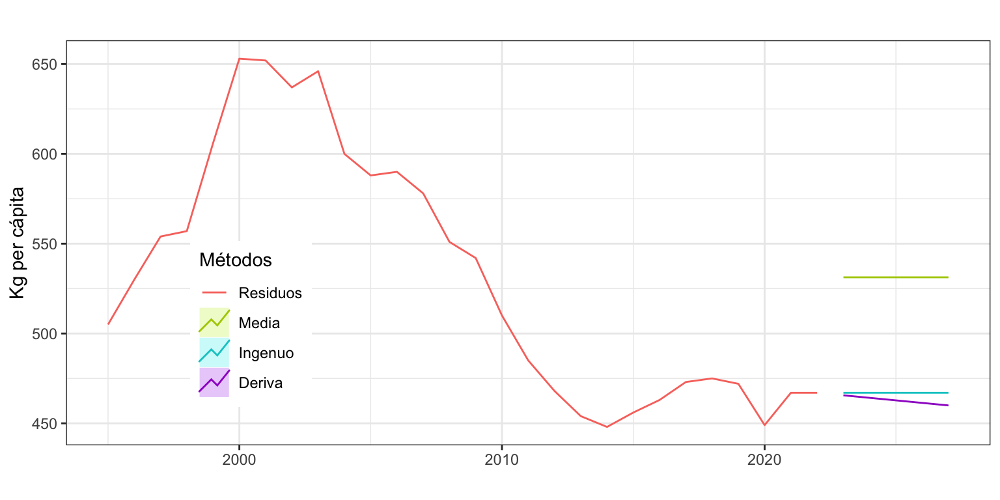
Figura 2: Recogida de residuos y predicción por métodos sencillos
Con la función accuracy se puede obtener el error de ajuste a un periodo vista de cada método:
ME RMSE MAE MPE MAPE MASE ACF1
Media 0.00 68.19 60.52 -1.60 11.41 3.66 0.93
Ingenuo I -1.41 21.60 16.52 -0.36 3.05 1.00 0.41
Deriva 0.00 21.55 16.50 -0.10 3.04 1.00 0.41
Podemos destacar que:
El método de la deriva presenta la mejor calidad de ajuste con un error de 21.5 kg per cápita (RMSE) o del 3.04% (MAPE). El método Ingenuo I tienen una calidad de ajuste similar, con un error medio de 21.6 kg per cápita (RMSE) y un error porcentual del 3.05% (MAPE).
Si se usa como criterio de calidad de ajuste el error absoluto medio (MAE), vuelve a ser mejor el método Ingenuo I.
Ningún método genera predicciones por intervalo fiables (ACF1 > 0.1).
Los métodos Ingenuo I y de la Deriva no presentan sesgo (|MPE| < 1%), pero si lo hace el de la Media. Además, el error medio (ME) siempre será nulo para el método de la Media y de la Deriva, lo que indica que en términos absolutos nos equivocamos lo mismo por exceso como por defecto. Esta es una buena propiedad, que el método Ingenuo I no verifica.
Para series sin estacionalidad el método sencillo de comparación usado en el cálculo del MASE es el Ingenuo I. Es por ello que este indicador vale 1 para este método. Como el método de Media tiene un MAE superior al Ingenuo I, su MASE es mayor que 1. En concreto, MASE = 3.66 = 60.52 / 16.52.
Concluimos que, con independencia del criterio usado, el método que mejor ajusta los datos es el de la Deriva.
Serie Nacimientos
Podemos usar el método ingenuo con estacionalidad con la serie Nacimientos para obtener una previsión a dos años vista.
Point Forecast Lo 95 Hi 95
Jan 2024 27086 23681.60 30490.40
Feb 2024 24538 21133.60 27942.40
Mar 2024 26486 23081.60 29890.40
Apr 2024 24986 21581.60 28390.40
May 2024 26142 22737.60 29546.40
Jun 2024 26431 23026.60 29835.40
Jul 2024 27564 24159.60 30968.40
Aug 2024 27967 24562.60 31371.40
Sep 2024 27596 24191.60 31000.40
Oct 2024 28887 25482.60 32291.40
Nov 2024 27428 24023.60 30832.40
Dec 2024 27162 23757.60 30566.40
Jan 2025 27086 22271.45 31900.55
Feb 2025 24538 19723.45 29352.55
Mar 2025 26486 21671.45 31300.55
Apr 2025 24986 20171.45 29800.55
May 2025 26142 21327.45 30956.55
Jun 2025 26431 21616.45 31245.55
Jul 2025 27564 22749.45 32378.55
Aug 2025 27967 23152.45 32781.55
Sep 2025 27596 22781.45 32410.55
Oct 2025 28887 24072.45 33701.55
Nov 2025 27428 22613.45 32242.55
Dec 2025 27162 22347.45 31976.55
accuracy(snaive.nacimientos)
ME RMSE MAE MPE MAPE MASE ACF1
Training set -602.6128 1736.971 1380.05 -1.630955 3.740705 1 0.7137736
El error absoluto porcentual medio es del 3.7% (que corresponde a unos 1700 bebés según RMSE). Es decir, aplicando algo tan simple como predecir el número de nacimientos para un mes como los nacimientos del mismo mes del año previo, tenemos ya un error de ajuste muy bajo. Sin embargo, este método en general sobreestima algo el número de nacimientos (MPE inferior a -1%) y sus predicciones por intervalo no son fiables.
La Figura 3 muestra la serie y la predicción que, debido al método usado, no incorpora la tendencia decreciente de los últimos años.
Figura 3: Nacimientos y predicción por el método Ingenuo con estacionalidad
Serie Demanda eléctrica
Podemos usar el método ingenuo con estacionalidad con la serie Demanda eléctrica, que tiene una estacionalidad de orden 7, pero no parece presentar tendencia. El error absoluto porcentual medio es del 4.7% o 45 GWh (RMSE), un error razonablemente reducido. Sin embargo, el ACF1 indica que la fórmula usada para el cálculo del intervalo de confianza de las predicciones no es válida.
ME RMSE MAE MPE MAPE MASE ACF1
Training set 0.4959497 45.1574 31.82282 -0.1492087 4.743026 1 0.7470267
La Figura 4 muestra la serie y la predicción a cuatro semanas vista. Debido a que la semana de referencia para predecir es la semana de Navidad, donde el consumo eléctrico es inferior al usual, las predicciones resultan ser claramente incorrectas. Este es un buen ejemplo de la diferencia entre calidad de ajuste y precisión de las predicciones.
Figura 4: Demanda eléctrica y predicción por el método Ingenuo con estacionalidad
4 Evaluación de las predicciones
Las medidas que hemos usado hasta ahora para valorar la calidad de los modelos son medidas de bondad de ajuste, es decir, medidas de la calidad de previsiones intramuestrales a un periodo vista: valoran en que medida los datos se ajustan a un modelo, pero no evalúan la precisión de la previsiones más allá del periodo muestral.
En este tema vamos a ver dos metodologías que podemos usar para valorar la precisión o calidad de las previsiones extramuestrales, que es realmente lo que nos interesa. Estas dos metodologías están relacionadas con los métodos de Conjunto de datos de entrenamiento y prueba (Training set/Test set) y Validación cruzada (Cross-validation), pero adaptadas a datos temporales.
4.1 Validación por conjunto de datos de entrenamiento y prueba
Vamos a estimar la calidad de las predicciones obteniendo medidas de error para previsiones extramuestrales a varios periodos vista usando la filosofía del conjunto de datos de entrenamiento y prueba.
Dividimos la serie temporal \(\{y_t\}_{t=1}^T\) en dos subseries. Los primeros datos \(\{y_t\}_{t=1}^{T_0}\), \(T_0 < T\), se usarán para estimar el modelo (conjunto de entrenamiento); y los últimos datos \(\{y_t\}_{t={T_0+1}}^{T}\) para calcular la precisión de las predicciones (conjunto de prueba).
Esta metodología, muy efectiva para datos de corte transversal, genera dos problemas cuando se aplica a series temporales: i) el error obtenido es una mezcla de errores de predicción a diferentes horizontes temporales, difícil de interpretar; ii) los resultados dependen tremendamente del punto de corte temporal seleccionado \(T_0\).
Serie Residuos
Vamos a reservar, por ejemplo, las últimas 7 observaciones de la serie Residuos (años 2016 a 2022) y ajustar el modelo con las restantes. Después usaremos este modelo para calcular las predicciones a 7 periodos vista y compararlas con los valores reales de la serie.
# Definimos las observaciones intra- y extramuestralesresiduosIntra <-subset(residuos, end =length(residuos) -7)residuosExtra <-subset(residuos, start =length(residuos) -6)# Estimamos el modelo con todos los datos menos los 7 ultimos y# predecimos los 7 años que hemos quitado de la serie residuosExtraPre <-rwf(residuosIntra, h =7, drift =TRUE)# Vemos la calidad del ajuste. Primero la predicción y luego los datos realesaccuracy(residuosExtraPre, residuosExtra)
ME RMSE MAE MPE MAPE MASE ACF1 Theil's U
Training set 0.00 23.94 18.80 -0.15 3.35 0.98 0.45 NA
Test set 20.37 22.07 20.37 4.34 4.34 1.06 -0.19 1.84
Atendiendo al MAPE se tiene que el error de previsión a un periodo vista en el periodo intramuestral de 1995 a 2015 es del 3.4%; mientras que el error de previsión a largo plazo en el periodo extramuestral de 2016 a 2022 es del 4.3%. Ademas, para el periodo extramuestral el error medio (ME) es positivo y muy elevado, un indicativo de que las previsiones están segadas (subestiman la realidad). En resumen, la calidad del modelo se deteriora cuanto nos salimos de las condiciones óptimas.
La Figura 5 puede ayudar a entender este proceso de validación:
La línea de puntos vertical separa el periodo muestral (1995-2015) usado para estimar el modelo, del periodo extramuestral (2016-2022) usado sólo para hacer las previsiones.
La serie Residuos aparece como una línea sólida en negro, desde 1995 hasta 2022.
La previsión intramuestral (a un periodo vista) de la serie Residuos aparece como una línea azul.
La línea en rojo es la previsión extramuestral a largo plazo. Observa que todas las previsiones están por debajo del valor real de la serie.
Al lado de cada previsión (intra y extramuestral) se ha indicado el error estimado (MAPE).
Claramente estos resultados dependen del punto de corte seleccionado.
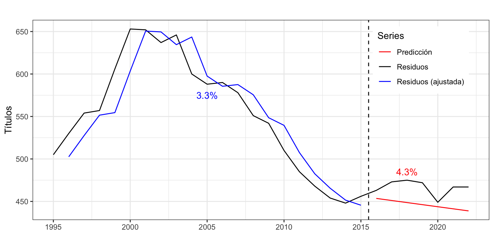
Figura 5: Residuos, predicción intra- y extramuestral
Importamcia del punto de corte
Prueba a reservar las últimas 6 observaciones de la serie Residuos y repite el análisis.
Serie Nacimientos
Calculamos de nuevo los diferentes criterios de bondad de ajuste para valorar la calidad de las previsiones extramuestrales a largo plazo. En este caso vamos a reservar los últimos 36 meses como periodo extramuestral.
nacimientosIntra <-subset(nacimientos, end =length(nacimientos) -36)nacimientosExtra <-subset(nacimientos, start =length(nacimientos) -35)nacimientosExtraPre <-snaive(nacimientosIntra, h =36)accuracy(nacimientosExtraPre, nacimientosExtra)
ME RMSE MAE MPE MAPE MASE ACF1 Theil's U
Training set -607.52 1730.10 1390.96 -1.6 3.69 1.00 0.71 NA
Test set -946.17 2372.85 1910.22 -3.7 7.14 1.37 0.27 1.35
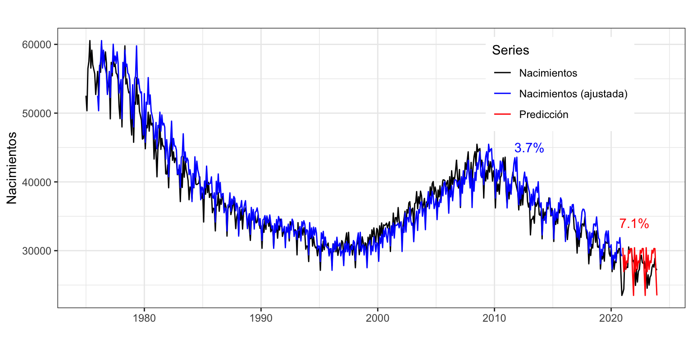
Figura 6: Nacimientos, predicción intra- y extramuestral
Las previsiones extramuestrales muestran una menor pendiente que los casos reales de nacimientos. Por un lado, el periodo de previsión contiene el atípico año de la pandemia; y, por otro lado, conforme se avanza en el horizonte temporal las previsiones se van alejando de la realidad y el error extramuestral es del 7.1%, duplicando el error de estimación intramuestral de 3.7%.
Serie Demanda eléctrica
Para la serie de consumo eléctrico vamos a reservar las 8 últimas semanas (56 días) como periodo extramuestral.
electricidadIntra <-subset(electricidad, end =length(electricidad) -56)electricidadExtra <-subset(electricidad, start =length(electricidad) -55)electricidadExtraPre <-snaive(electricidadIntra, h =56)accuracy(electricidadExtraPre, electricidadExtra)
ME RMSE MAE MPE MAPE MASE ACF1 Theil's U
Training set 0.43 44.41 31.41 -0.15 4.68 1.00 0.77 NA
Test set 39.83 63.05 47.74 5.51 6.86 1.52 0.36 1.07
El error intramuestral obtenido es del 4.7%, que aumenta 2 p.p. al obtener el error de previsión extramuestral (6.9%). El elevado valor positivo del error medio indica que las previsiones extramuestrales subestiman el consumo real de electricidad.
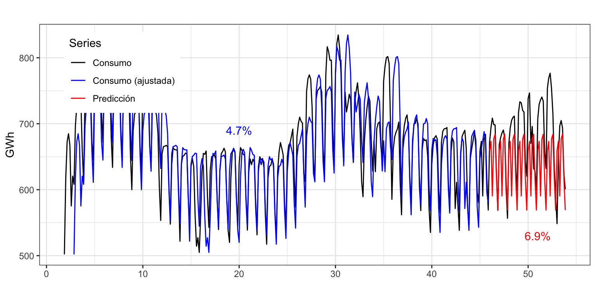
Figura 7: Consumo eléctrico, predicción intra- y extramuestral
4.2 Origen de predicción móvil
Veamos ahora una técnica, basada en el concepto de validación cruzada que permite obtener de forma individualizada los errores de previsión extramuestral a un periodo vista, a dos periodos vista, etc.
Supongamos que para estimar el modelo se necesita un mínimo de \(k\) observaciones y que se desea predecir hasta un horizonte temporal \(h\).
Seleccionamos las observaciones \(1,2,...,k\) para estimar el modelo y predecimos las observaciones desde \(k+1\) hasta \(k+h\). Tenemos, por tanto, \(h\) predicciones.
Calculamos el error de predicción para las predicciones desde \(k+1\) hasta \(k+h\). Tenemos \(h\) errores, el primero a un periodo vista, el segundo a dos periodos vista y el último a \(h\) perriodos vista.
Repetimos este proceso desplazando el número de observaciones seleccionadas para la estimación un periodo adelante. Es decir, ahora usamos las observaciones \(2,3,...,k+1\) para estimar el modelo, predecimos las observaciones desde \(k+2\) hasta \(k+1+h\) y calculamos el error de predicción.
Iteramos el proceso, desplazando cada vez las observaciones de la estimación un periodo adelante.
En general para \(i=0,1,...,T-k-h\), donde \(T\) es el número total de observaciones:
Seleccionamos las observaciones \(i+1,i+2,...,i+k\) para estimar el modelo.
Predecimos las observaciones desde \(i+k+1\) hasta \(i+k+h\).
Calculamos el error de predicción para las observaciones desde \(i+k+1\) hasta \(i+k+h\).
Para cada horizonte temporal de predicción se calcula la medida de error deseada.
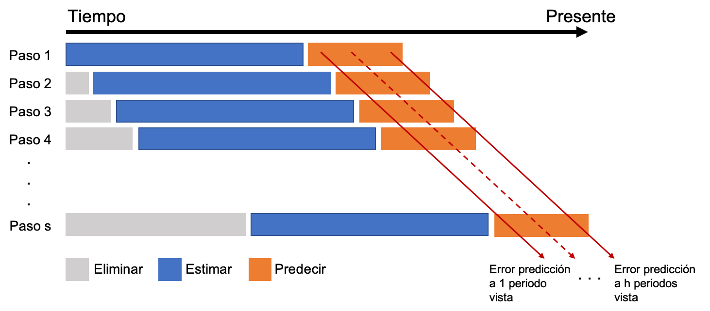
Figura 8: Descripción del proceso de origen de predicción móvil
Este procedimiento se denomina origen de predicción móvil, en inglés rolling forecast origin o rolling windows.
Cuando se aplica esta metodología hay que tener en cuenta que los resultados pueden depender del número \(k\) de datos usados para la estimación del modelo.
Ejemplo de aplicación con Nacimientos
Vamos a aplicar la metodología previa a la serie anual de Nacimientos. Asumimos que se precisan veinte años para hacer una buena estimación, \(k=20\), y que el horizonte temporal es de cinco años, \(h = 5\). Como la serie es anual, usaremos el método de la deriva para predecir. La siguiente rutina permite obtener el MAPE para previsiones con un horizonte temporal desde uno a cinco años.
nacAnual <-aggregate(nacimientos, FUN = sum)k <-20#Minimo numero de datos para estimarh <-5#Horizonte de las predicicionesTT <-length(nacAnual) #Longitud series <- TT - k - h #Total de estimacionesmapeRwf <-matrix(NA, s +1, h)for (i in0:s) { train.set <-subset(nacAnual, start = i +1, end = i + k) test.set <-subset(nacAnual, start = i + k +1, end = i + k + h) fcast <-rwf(train.set, h = h, drift =TRUE) mapeRwf[i +1,] <-100*abs(test.set - fcast$mean)/test.set}
La matriz mapeRwf contiene los errores de previsión extramuestral, donde cada columna corresponde a un horizonte temporal de previsión diferente. Ahora vamos a calcular el error medio por columna.
Para evitar el posible efecto datos atípicos, se puede calcular el error mediano en lugar del error medio. En este caso no hay una función directa en R y usaremos apply.
mapeRwfMediana <-apply(mapeRwf, MARGIN =2, FUN = median)round(mapeRwfMediana, 2)
[1] 4.10 8.97 13.16 17.80 21.52
El error de previsión extramuestral (medio o mediano) crece gradualmente con el horizonte de previsión. Para el primer año el error de predicción se mantiene en un moderado 4%, para el segundo año de predicción el MAPE salta al 8-9% y para los restantes años sigue creciendo. Como la serie de Nacimientos no presenta años especialmente atípicos, para todos los horizontes de previsión el error medio y mediano es muy similar.
Ejemplo de aplicación con Demanda eléctrica
Ahora aplicaremos la metodología origen de predicción móvil la serie de Demanda eléctrica. En este caso se asumirá que se precisan veinte semanas para hacer una buena estimación, \(k = 140\), y que el horizonte temporal es de 4 semanas, \(h = 28\). Como la serie tiene estacionalidad, usaremos el método ingenuo con estacionalidad para predecir. La siguiente rutina permite obtener el RMSE para previsiones con un horizonte temporal desde uno a 28 días.
k <-140#Minimo numero de datos para estimarh <-28#Horizonte de las predicicionesTT <-length(electricidad)#Longitud series <- TT - k - h #Total de estimacionesrmseRwf <-matrix(NA, s +1, h)for (i in0:s) { train.set <-subset(electricidad, start = i +1, end = i + k) test.set <-subset(electricidad, start = i + k +1, end = i + k + h) fcast <-snaive(train.set, h = h) rmseRwf[i +1,] <- (test.set - fcast$mean)^2}rmseRwfMedia <-sqrt(colMeans(rmseRwf))round(rmseRwfMedia, 2)
En este caso, la presencia de muchos días atípicos (todos los festivos entre semana el consumo de electricidad es notablemente más bajo de lo esperado) y de una segunda componente estacional dentro del año hacen que el error medio sea más elevado que el mediano –proximadamente, el primero es el doble que el segundo.
Respecto del error de previsión mediano, este crece semana tras semana con el horizonte de previsión. Para predicciones de uno a siete periodos vista el error de predicción está alrededor de los 20 GWh; desde 8 a 14 días vista sube hasta los 30 GWh; y a 28 días vista alcanza los 40 GWh.
Código para cálculo del error deseado
Para Nacimientos hemos visto el código necesario para calcular el MAPE por origen de predicción móvil. Las dos líneas clave del código son:
La primera línea obtiene el error porcentual absoluto de cada observación y la segunda calcula la media de estos errores.
Para calcular el RMSE en el ejemplo de Demanda eléctrica ha sido necesario adaptar estás dos líneas de código adecuadamente. Ahora la primera línea calcula el error cuadrático de cada observación y la segunda la raíz de la media de estos errores:
rmseRwf[i + 1,] <- (test.set - fcast$mean)^2
rmseRwfMedia <- sqrt(colMeans(rmseRwf))
En general, según el error que desees obtener, deberás modificar estas dos líneas de código como corresponda.
Además, si hay valores atípicos, puede ser conveniente calcular el error mediano en lugar del error medio.
5 Métodos de Alisado Exponencial
5.1 Introducción
Los métodos de alisado exponencial aparecen en los años 50 del siglo pasado de la mano de Brown, Holt y Winters (véase Brown 1959; Holt 2004; Winters 1960) y han sido la raíz de uno de los métodos de predicción más sencillos y eficaces. La idea básica es predecir usando una media ponderada de los datos pasados, donde los más recientes tienen un peso mayor y este decae exponencialmente conforme usamos observaciones más antiguas.
El alisado exponencial es una familia de métodos de ajuste y previsión que ofrece muy buenos resultados para predicciones a corto plazo o para predecir series con pocos datos o sencillas (sin mucho ruido).
Suponen un grado de modelización mayor que los métodos sencillos vistos previamente, pero sin alcanzar la complejidad de otras metodologías (modelos ARIMA).
En origen, son métodos descriptivos con el único objetivo de producir predicciones puntuales. Sin embargo, su enfoque como modelos de espacio de estados posibilita un marco teórico para obtener intervalos de confianza de las predicciones.
5.2 Componentes de una serie en el contexto del alisado exponencial
Para obtener una predicción en el periodo \(t+1\) con datos hasta el periodo \(t\) necesitamos tres componentes:
La estimación del nivel de la serie en el periodo \(t\): \(l_t\)
La estimación de la pendiente de la serie en el periodo \(t\): \(b_t\)
La estimación de la estacionalidad en el mes correspondiente al periodo \(t+1\) con datos hasta \(t\): \(s_{t + 1 - m}\) (recuerda, \(m\) es el orden estacional
A partir de estas componentes obtenidas en el periodo \(t\) y para un esquema aditivo, se tendría que la predicción en el periodo \(t+1\) es:
\[\widehat{y}_{t+1} = l_t+b_t+s_{t+1-m}.\]
En general, las componentes pueden existir o no y se pueden combinar entre ellas aditiva o multiplicativamente. Veamos algunos casos:
Existen todas y son multiplicativas: \(\widehat{y}_{t+1}=l_t \cdot b_t \cdot s_{t + 1 - m}\)
Existen todas, nivel y pendiente aditivas, y estacionalidad multiplicativa: \(\widehat{y}_{t+1}=(l_t+b_t)s_{t + 1 - m}\)
No hay pendiente y la estacionalidad es aditiva: \(\widehat{y}_{t+1}=l_t+s_{t + 1 - m}\)
¿Como obtenemos los valores de \(l_t\), \(b_t\) y \(s_{t + 1 - m}\)? Mediante expresiones recursivas, donde cada componente se calcula a partir de los valores hasta \(t\) de la serie y de las componentes:
Por ejemplo, el método ingenuo I se puede interpretar dentro de este contexto como un método de alisado donde \(l_t = y_t\) y no hay ni pendiente ni estacionalidad. Por tanto, \(\widehat{y}_{t+1} = l_{t} = y_{t}\).
De la misma forma, el método ingenuo II se puede interpretar como un método de alisado donde \(l_t = y_t\), \(b_t = y_t - y_{t-1}\) y no hay estacionalidad. Entonces, \(\widehat{y}_{t+1}=l_t + b_t = y_t + (y_t - y_{t-1})\).
En las expresiones previas hemos supuesto que se quería obtener una predicción a un periodo vista (\(\widehat{y}_{t+1}\)). Si el objetivo es estimar una previsión \(h\) periodos hacia delante desde el periodo \(t\), \(\widehat{y}_{t+h}\), hay que modificar la ecuación de predicción adecuadamente. Por ejemplo, para el caso aditivo se tendría que
\[\widehat{y}_{t+h} = l_t+hb_t+s_{t+h-m(k+1)}\] donde \(k = \lfloor (h-1)/m\rfloor\).
El concepto de componentes aquí visto no coincide con el definido en el Tema 1. Sin embargo, podemos asimilar la tendencia de una serie como la suma (o multiplicación) del nivel y la pendiente \(T_{t+1} = l_t + b_t\) (o \(T_{t+1} = l_t \cdot b_t\)) y de esta forma ambas definiciones de componentes de una serie se hacen compatibles.
5.3 Casos posibles
Todas las series tiene nivel, pero dependiendo del tipo de pendiente y estacionalidad hay 15 casos posibles, mostrados en la Tabla 1.
Tabla 1: Casos de alisado según el tipo de tendencia y estacionalidad
Tendencia
Estacionalidad
Ninguna (N)
Aditiva (A)
Multiplicativa (M)
Ninguna (N)
N, N
N, A
N, M
Aditiva (A)
A, N
A, A
A, M
Aditiva Amortiguada (Ad)
Ad, N
Ad, A
Ad, M
Multiplicativa (M)
M, N
M, A
M, M
Multiplicativa Amortiguada (Md)
Md, N
Md, A
Md, M
Cada caso difiere en las componentes que se observan y su esquema, dando lugar a un conjunto diferente de ecuaciones recursivas de actualización.
Residuo aditivo versus residuo multiplicativo
Todo modelo estimado tiene asociado un residuo. En los modelos usuales este error se define como, \(\widehat{\varepsilon}_t = y_t - \widehat{y}_t\), pero no tiene por que ser así,. En los modelos de Alisado el residuo estimado puede ser aditivo o multiplicativo.
Si el residuo es aditivo, entonces el modelo es \(y_t = \widehat{y}_t + \widehat{\varepsilon}_t\) y el residuo se define de la forma usual \[\widehat{\varepsilon}_t = y_t - \widehat{y}_t.\]
Ahora bien, si el residuo es multiplicativo, entonces el modelo es \(y_t = \widehat{y}_t \cdot (1 + \widehat{\varepsilon}_t)\), y no \(y_t = \widehat{y}_t \cdot \widehat{\varepsilon}_t\) como se podría esperar. Por tanto, el residuo multiplicativo se define como \[\widehat{\varepsilon}_t = (y_t - \widehat{y}_t)/\widehat{y}_t.\]
De esta forma en ambos casos –aditivo y multiplicativo– el residuo evoluciona alrededor del valor 0 y se le pueden imponer las hipótesis usuales de ruido blanco. Observa que el error multiplicativo tampoco es el error porcentual tal y como se define para el calculo del MPE o del MAPE.
En cualquiera de los casos y para cualquier modelo estimado con R, podemos obtener el residuo con la función residuals.
Casos más comunes
Si a la Tabla 1 se añade que el error puede ser aditivo (A) o multiplicativo (M), tenemos 30 posibilidades. El tipo de error (aditivo o multiplicativo) es, sobre todo, relevante en el cálculo del intervalo de confianza de las predicciones.
Los modelos más usuales son (error, tendencia, estacionalidad):
(A, N, N): Alisado exponencial simple
(A, A, N): Alisado de Holt
(A, Ad, N): Alisado con tendencia amortiguada (d de damped)
(A, A, A): Alisado de Holt-Winters aditivo
(M, A, M): Alisado de Holt-Winters multiplicativo1
Acude al artículo de Hyndman and Khandakar (2008) para saber más de cada modelo, o al libro de Hyndman et al. (2008).
Las funciones ets y forecast
Podemos estimar cualquiera de los treinta modelos usando la función ets del paquete forecast.
El tipo de modelo en ets se especifica con el argumento model, un código de tres letras indicando el tipo de Error, Tendencia y eStacionalidad (ETS). Por ejemplo, model = "ANN" indica un modelo con error aditivo, sin tendencia ni estacionalidad, es decir, el alisado exponencial simple; model = "AAN" indica un modelo con error aditivo, pendiente aditiva, pero sin estacionalidad, el alisado exponencial de Holt. El alisado exponencial de Holt-Winters multiplicativo sería model = "MAM".
Si se desea incluir amortiguamiento, hay que añadir el argumento damped = TRUE.
Por defecto ets no considera modelos con tendencia multiplicativa (últimas dos líneas de la Tabla 1). Debes fijar el parámetro allow.multiplicative.trend=TRUE para contemplar esta opción.
A diferencia de las funciones vistas en el epígrafe 3.1 (naive, meanf, rwf y snaive), la función ets solo estima los modelos, pero no produce predicciones. Para ello habrá que usar la función forecast sobre un modelo estimado con ets. El argumento h de esta función especifica el horizonte temporal de predicción. También puedes usar level para fijar el nivel de confianza del intervalo de predicción.
Mira la ayuda de R para ver una explicación detallada de los argumentos de estas las funciones ets y forecast.
5.4 Alisado exponencial simple (A, N, N)
Definición
El alisado exponencial simple es adecuado para una serie estacionaria y sin estacionalidad. Es decir, una serie que se mueve alrededor de un nivel medio desconocido: \(y_t = \mu + \varepsilon_t\). Por tanto, para obtener una predicción en el periodo \(t+1\) necesitamos la estimación del nivel de la serie con la información disponible hasta el periodo \(t\). Denominaremos a este nivel \(l_t\), de esta forma se tendrá que: \[\widehat{y}_{t+1} = l_t.\]
Es decir, \(l_t\) es la estimación del nivel desconocido \(\mu\) con información hasta el periodo \(t\).
¿Pero cómo obtenemos \(l_t\)? Mediante una expresión recursiva donde el nivel \(l_t\) se calcula a partir de los valores hasta \(t\) de la serie y los valores pasados estimados para el nivel. En concreto, para el Alisado exponencial simple la ecuación recursiva de suavizado es \[l_t=\alpha y_t + (1-\alpha)l_{t-1}.\] Dos estimaciones razonables de \(l_t\), el nivel de la serie en el periodo \(t\), son el valor observado para la serie en ese periodo \(y_t\) y el nivel del periodo previo \(l_{t-1}\). La estimación final de \(l_t\) es una media ponderada de ambas según el parámetro \(\alpha\), y esta estimación final es la previsión de la serie para el periodo siguiente.
El parámetro \(\alpha\) se denomina parámetro de suavizado y verifica que \(0 \leq \alpha \leq 1\).
Ya hemos comentado que la ecuación de predicción intramuestral es \(\widehat{y}_{t+1} = l_t\). La ecuación de predicción extramuestral es \[\widehat{y}_{T+h} = \widehat{y}_{T+1} = l_T.\] El método de Alisado también ofrece predicciones constantes para series sin tendencia ni estacionalidad.
Estimación de los parámetros del modelo
Dado el proceso iterativo para el cálculo de \(l_t\) se necesita un valor inicial de arranque \(l_0\). Cada programa estadístico usa su propio método para obtener \(l_0\).
Respecto de \(\alpha\), usualmente se estima el valor optimo según un criterio de calidad de ajuste. El parámetro \(\alpha\)se puede interpretar:
Si \(\alpha = 1\), la ecuación recursiva queda \(l_t = y_t\), es decir, el método ingenuo I (\(\widehat{y}_{t+1}=y_t\)). Este caso es óptimo cuando el nivel de la serie varía constantemente en el tiempo.
Si \(\alpha = 0\), la ecuación recursiva queda \(l_t=l_{t-1}=\ldots = l_0\), es decir, \(\hat y_{t+1}= l_0\). Esto es óptimo cuando el nivel permanece constante en el tiempo.
En concreto, ets por defecto estima los parámetros \(\alpha\) y \(l_0\) maximizando la función de verosimilitud, pero el argumento opt.crit permite cambiar de criterio. Esta búsqueda está restringida a \(0 < \alpha < 1\). Es decir el parámetro \(\alpha\) nunca puede ser 0 o 1 y en la práctica sus valores limite son 0.0001 y 0.9999.
Ejemplo de aplicacion a la serie consumo de alimentos en hogar
Analizaremos el consumo alimentario en hogar per cápita en España. Esta serie está construida a partir de la serie de consumo alimentario en hogar (disponible en el Ministerio de Agricultura, Alimentación y Medio Ambiente), y la serie de población (disponible en el Instituto Nacional de Estadística). Es una serie anual de 1990 a 2023 (34 datos) y la unidad es el Kg per cápita. La Figura 9 muestra que es una serie estacionaria.
El pico en el año 2020 se debe al aumento del consumo de alimentos en el hogar causado por el periodo de confinamiento por la Covid-19 (marzo a junio) y el aumento del trabajo en casa.
Vamos a usar el método de alisado exponencial simple para predecir la serie Consumo de alimento en el hogar. Usaremos para ello la función ets con model = "ANN".
etsAlimentospc <-ets(alimentospc, model ="ANN")summary(etsAlimentospc)
ETS(A,N,N)
Call:
ets(y = alimentospc, model = "ANN")
Smoothing parameters:
alpha = 0.954
Initial states:
l = 625.4154
sigma: 22.0981
AIC AICc BIC
334.3284 335.1284 338.9074
Training set error measures:
ME RMSE MAE MPE MAPE MASE
Training set -2.138992 21.43828 14.04374 -0.4243009 2.243991 0.9810031
ACF1
Training set 0.004506905
Veamos la salida en detalle:
El valor de \(\alpha\) óptimo (minimiza la verosilimilitud) es \(\alpha =\) 0.95, un valor muy cercano a 1. Es decir, el nivel de Alimentos varía constantemente en el tiempo.
El valor de arranque \(l_0\) óptimo es 625.42. Es decir, el año 1989 (año anterior al primero de la serie) se estima un nivel de consumo de 625.42 kg per cápita.
sigma es la desviación típica del error (aditivo) de predicción. Se diferencia de RMSE en el denominador. Para calcular sigma en lugar de dividir por \(T\) se divide por \(T-k\), donde \(k\) es el número de parámetros estimados por el modelo. En este caso, \(k=3\): \(l_0\), \(\alpha\) y sigma. Sí, sigma se considerará siempre otro parámetro estimado.
Se obtiene un AICc \(= 335.13\). Si estimamos un modelo con error multiplicativo, obtendremos un AICc mayor.
La calidad del ajuste es buena, como evidencia el error porcentual medio del 2.2%. Además, no hay sesgo (MPE = -0.42%) y el cálculo de la predicciones por intervalo es correcto (ACF1 = 0.0045).
Como el valor de \(\alpha\) es próximo a 1, el modelo de Alisado se aproxima mucho al Ingenuo I. Por este motivo el MASE es casi igual a 1.
En el objeto etsAlimentospc la matriz etsAlimentospc$states guarda todos los valores del nivel obtenidos con la ecuación recursiva, incluido el valor de arranque, así que es una matriz con \(T+1\) filas (35 en el ejemplo). Puedes ver en su última fila que el valor de \(l_{2023}\), el nivel del último año, vale 556.03.
tail(etsAlimentospc$states, 1)
Time Series:
Start = 2023
End = 2023
Frequency = 1
l
[1,] 556.0329
Por tratarse de un modelo sin pendiente ni estacionalidad, la predicción es constante en el tiempo. Recuerda que \(\widehat{y}_{T+h} = l_T\). Así, la predicción para 2024 es \(\widehat{y}_{2024}=l_{2023}=\) 556.03. Igualmente \(\widehat{y}_{2025}=l_{2023}=\) 556.03. Todas las previsiones son iguales a \(l_{2023}\).
Mediante la función forecast podemos predecir el consumo de alimentos per cápita para los próximos cinco años.
Point Forecast Lo 95 Hi 95
2024 556.0329 512.7215 599.3443
2025 556.0329 496.1726 615.8932
2026 556.0329 483.2962 628.7696
2027 556.0329 472.3789 639.6870
2028 556.0329 462.7303 649.3355
La Figura 10 muestra la serie Consumo de alimentos, las previsiones extramuestrales que son constantes y el intervalo de confianza. Conforme aumentamos el horizonte de predicción, el intervalo de confianza es más amplio como reflejo de la mayor incertidumbre en la predicción.
autoplot(etsAlimentospcf,xlab ="",ylab ="Kg per cápita",main ="")
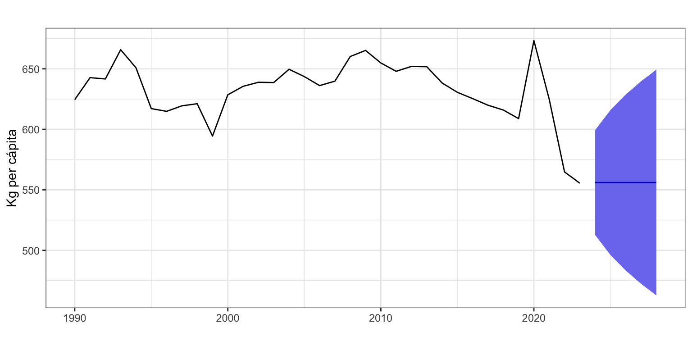
Figura 10: Consumo de alimentos per cápita (1990 - 2023) y predicción con Alisado exponencial simple
5.5 Alisado exponencial de Holt (A, A, N)
El alisado exponencial de Holt es adecuado para una serie no estacionaria y sin estacionalidad.
La ecuación de la predicción intramuestral a un periodo vista es
\[\widehat{y}_{t+1} = l_t + b_t,\] de forma que la ecuación de predicción extramuestral es \[\widehat{y}_{T+h}=l_T + h b_T.\]
Dos estimaciones razonables del nivel de la serie en el periodo \(t\) son el valor observado para la serie en ese periodo \(y_t\), y una estimación del nivel del periodo \(t\) realizada desde el periodo \(t-1\): \(l_{t-1} + b_{t-1}\). Por otro lado, dos estimaciones razonables de la pendiente de la serie en el periodo \(t\) son el cambio de nivel de \(t-1\) a \(t\) (el último observado) \(l_t-l_{t-1}\), y el valor de la pendiente en el periodo previo, \(b_{t-1}\). En ambos casos, nivel y pendiente, la estimación final es una media ponderada, parametrizada por \(0 < \alpha, \beta < 1\).
Observa que el método ingenuo II es un caso concreto de Alisado de Holt. Si hacemos \(\alpha=\beta = 1,\) queda \(l_t=y_t\) y \(b_t=y_t-y_{t-1}\), por tanto \[\widehat{y}_{t+1}=l_t + b_t = y_t + (y_t - y_{t-1})\] y \[\widehat{y}_{T+h}=l_T + h \cdot b_T = y_T + h(y_T - y_{T-1}).\]
¿Sabrías responder a estas preguntas?
Hemos visto que en modelo de Alisado con tendencia, si \(\alpha = \beta = 1\), la ecuación de predicción que queda es la del método Ingenuo II.
¿Cómo quedaría la ecuación de predicción si \(\alpha = \beta = 0\)?
¿Y si \(\alpha = 1\) y \(\beta = 0\)? ¿Y si \(\alpha = 0\) y \(\beta = 1\)?
Estimación de los parámetros del modelo
Para aplicar este método es necesario estimar unos valores iniciales \(l_0\) y \(b_0\) de las ecuaciones recursivas e identificar los valores más adecuados de los parámetros \(\alpha\) y \(\beta\).
La función ets por defecto estima los parámetros \(\alpha\), \(\beta\), \(l_0\) y \(b_0\) maximizando la función de verosimilitud. En este caso la búsqueda está restringida a \(0 < \beta < \alpha < 1\). Por tanto, \(\alpha\) y \(\beta\) nunca pueden ser 0 o 1 y en la práctica sus valores limite son 0.0001 y 0.9999.
La interpretación del parámetro \(\alpha\) es similar al caso del alisado exponencial simple.
Interpretación del parámetro\(\beta\):
Si \(\beta = 1\), \(b_t = l_t - l_{t-1}\), la pendiente se actualiza constantemente porque varía periodo a periodo Puede ser un indicador de mal ajuste (tendencia no lineal o pendiente no aditiva).
Si \(\beta = 0\), \(b_t = b_{t-1}= \ldots = b_0\), la pendiente se mantiene constante en el tiempo.
Ejemplo de aplicación a la serie Residuos
Vamos a usar el método de alisado de Holt para predecir la serie Residuos. Usaremos para ello la función ets con el argumento model = "AAN" (error y tendencia aditivas sin estacionalidad). Además, es necesario añadir el argumento damped = FALSE para prevenir el uso de tendencia amortiguada, que veremos en el siguiente epígrafe.
etsResiduos <-ets(residuos, model ="AAN",damped =FALSE)summary(etsResiduos)
ETS(A,A,N)
Call:
ets(y = residuos, model = "AAN", damped = FALSE)
Smoothing parameters:
alpha = 0.9917
beta = 1e-04
Initial states:
l = 568.957
b = -2.8916
sigma: 26.1313
AIC AICc BIC
281.7210 284.4483 288.3820
Training set error measures:
ME RMSE MAE MPE MAPE MASE
Training set -0.7573797 24.19288 18.21516 -0.2531821 3.386255 1.102711
ACF1
Training set 0.2192994
Los valores óptimos de los cuatro parámetros estimados son \(\alpha=\) 0.99, \(\beta=\) 0, \(l_0 =\) 568.96 y \(b_0 =\) -2.89.
Observa que \(\alpha\) es prácticamente 1 y que \(\beta\) es cero. Si aplicamos estos valores de los parámetros a las ecuaciones recursivas y la predicción extramuestral, obtenemos \(y_{T+h}=y_T + h\cdot b_0\): la predicción es el último valor observado más \(h\) veces la primera pendiente estimada. La calidad de las predicciones es razonable, con un error porcentual medio del 3.4%.
Por otro lado, el valor de \(l_0\) indica que el nivel estimado para el volumen de residuos de 1994 es de 568.96. Además, el incremento entre 1994 y 1995 se estima en \(b_0 =\) -2.89.
Parámetros estimados
¿Cuántos parámetros se han estimado (y la respuesta no es 4)? ¿Cuál es el denominador en el cálculo de RMSE y de sigma?
En el objeto etsResiduos la matriz etsResiduos$states guarda todos los valores obtenidos con las ecuaciones recursivas, en este caso el nivel y la pendiente, incluidos los valores de arranque. Puedes ver los valores de \(l_{2022}\) y \(b_{2022}\) en su última fila, que valen respectivamente
tail(etsResiduos$states, 1)
Time Series:
Start = 2022
End = 2022
Frequency = 1
l b
2022 466.9747 -2.893718
Así, la predicción para \(2023\) es \(\widehat{y}_{2023}=l_{2022} + b_{2022}=\) 466.97 \(+\) -2.89 \(=\) 464.08. Igualmente \(\widehat{y}_{2024}=l_{2022} + 2\cdot b_{2022}=\) 461.19. Es decir, la diferencia entre previsiones consecutivas es constante e igual a \(b_{2022}\) que, por ser \(\beta\) prácticamente nulo, casi coincide con \(b_0\).
Point Forecast Lo 95 Hi 95
2023 464.0810 412.8646 515.2974
2024 461.1873 389.0510 533.3236
2025 458.2936 370.0626 546.5245
2026 455.3998 353.5850 557.2147
2027 452.5061 338.7153 566.2970
La Figura 11 muestra la serie Residuos y las previsiones extramuestrales, que muestran una ligera tendencia decreciente.
autoplot(etsResiduosf,xlab ="",ylab ="Kg per cápita",main ="")
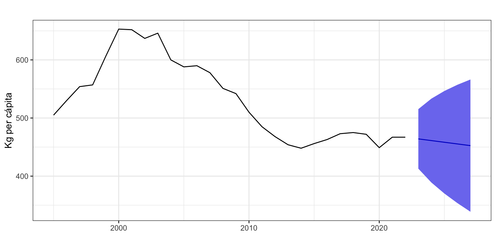
Figura 11: Residuos y predicción con alisado de Holt
5.6 Alisado exponencial con pendiente amortiguada (A, Ad, N)
Las previsiones con el método de Holt presentan siempre una pendiente constante. En previsiones a corto plazo esto no es un problema, pero para previsiones a largo plazo la experiencia indica que suele aparecer un sesgo de previsión. El alisado exponencial con pendiente amortiguada trata de corregir esta limitación. El mecanismo, propuesto por Gardner and Mckenzie (1985), es introducir un nuevo parámetro \(0 \leq \phi \leq 1\) que amortigua la tendencia hasta hacerla plana en el largo plazo.
La ecuación de la predicción intramuestral a un periodo vista es \[\widehat{y}_{t+1} = l_t + \phi b_t,\] de forma que la ecuación de predicción extramuestral es \[\widehat{y}_{T+h}=l_T + (\phi + \phi^2 + \ldots + \phi^h) b_T.\]
Se ha añadido un nuevo parámetro \(\phi\in [0, 1]\) que acompaña siempre a la pendiente \(b_t\). Si \(\phi = 1\), se tiene el alisado de Holt y si \(\phi = 0\), se tiene el alisado simple. Se puede comprobar que en el largo plazo las predicciones se hacen constantes e iguales a \(l_T + \phi b_T/(1 - \phi)\).
Por razones prácticas el rango de búsqueda de \(\phi\) queda en el intervalo \([0.8, 0.98]\). Si el valor óptimo de \(\phi\) fuera su valor máximo de \(0.98\) o muy cercano a este, cabría plantearse si no sería más adecuado un modelo sin amortiguamiento.
Ejemplo de aplicación a la serie Residuos
Vamos a usar el método de Alisado con amortiguamiento para predecir, una vez más, la serie Residuos añadiendo a la función ets el argumento damped = TRUE. En este caso, para ver el efecto del amortiguamiento vamos a pedir un horizonte temporal de previsión más largo.
etsDResiduos <-ets(residuos, model ="AAN", damped =TRUE)summary(etsDResiduos)
ETS(A,Ad,N)
Call:
ets(y = residuos, model = "AAN", damped = TRUE)
Smoothing parameters:
alpha = 0.9999
beta = 0.1808
phi = 0.8
Initial states:
l = 564.3968
b = 14.5779
sigma: 26.4267
AIC AICc BIC
283.1587 287.1587 291.1520
Training set error measures:
ME RMSE MAE MPE MAPE MASE ACF1
Training set -3.193352 23.9512 17.42662 -0.6361345 3.226137 1.054975 0.04099902
El valor óptimo del parámetro \(\phi\) es \(0.8\) y el error porcentual 3.2%, algo inferior al obtenido con el alisado de Holt sin amortiguamiento. Además, el modelo de Alisado con amortiguamiento genera intervalos de predicción correctos, cosa que no ocurría con el modelo de Alisado de Holt.
Parámetros estimados
¿Cuántos parámetros se han estimado en este caso? ¿Cuáles?
La Figura 12 muestra la serie Residuos, su estimación intramuestral y las predicciones a 15 años vista. Observa que la pendiente de las previsiones se amortigua en el tiempo, de forma que al principio las previsiones crecen más rápidamente que en los últimos años.
etsDResiduosf <-forecast(etsDResiduos, h =15,level =95)etsDResiduosf
autoplot(etsDResiduosf,xlab ="",ylab ="Kg per cápita",main ="",PI =FALSE)
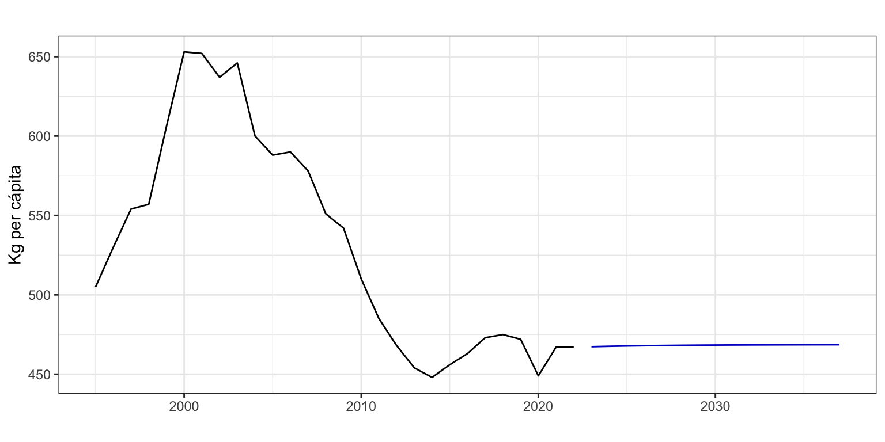
Figura 12: Residuos y predicción con alisado exponencial con amortiguamiento
5.7 Alisado de Holt-Winters aditivo (A, A, A) y multiplicativo (M, A, M)
El método de alisado exponencial de Holt-Winters es adecuado para una serie con tendencia y estacionalidad. Existen dos versiones según que el esquema sea aditivo o multiplicativo.
La ecuación de la predicción intramuestral a un periodo vista es \[\widehat{y}_{t+1} = l_t + b_t + s_{t+1-m},\] de forma que la ecuación de predicción extramuestral es: \[\widehat{y}_{T+h}=l_T + h b_T + s_{T+h - m(k+1)},\] con \(k = \lfloor(h-1)/m\rfloor\).
Observa que las ecuaciones para el nivel y la pendiente son similares a las ya vistas para el método de Holt. Respecto de la ecuación de actualización de la estacionalidad, dos estimaciones razonables de esta componente en el periodo \(t\) son su valor estimado a partir de la serie menos su tendencia \(y_t-l_{t-1} - b_{t-1}\), y la estimación que ya teníamos de la estacionalidad previamente, \(s_{t-m}\). La estimación final es una media ponderada, parametrizada por \(0 \leq \gamma < 1 - \alpha\).
Interpretación del parámetro\(\gamma\):
Si \(\gamma = 1\), \(s_t = y_t - l_{t-1} - b_{t-1}\), la estacionalidad se actualiza constantemente porque varía periodo a periodo
Si \(\gamma = 0\), \(s_t = s_{t-m}= \ldots = s_0\), la estacionalidad se mantiene constante en el tiempo.
5.7.2 Alisado de Holt-Winters multiplicativo (M, A, M)
La ecuación de la predicción intramuestral a un periodo vista es \[\widehat{y}_{t+1} = (l_t + b_t)s_{t+1-m},\] de forma que la ecuación de predicción extramuestral es: \[\widehat{y}_{T+h}=(l_T + h b_T)s_{T+h - m(k+1)}.\]
Ejemplo con Demanda electrica
Vamos a usar el método de Holt-Winters Aditivo para predecir la serie Demanda eléctrica, que presentaba un esquema aditivo. Para ello usaremos la función ets con el argumento model = "AAA" (y damped = FALSE). Vamos a considerar la serie desde el 31 de enero (lunes) hasta el 29 de mayo (domingo), 17 semanas, y pedir una previsión a dos semanas vista.
En el proceso de estimación, el parámetro \(\gamma\) que gobierna la componente estacional está restringido a \(0 < \gamma < 1 - \alpha\).
#Nos quedamos con los meses de febrero a mayo.electricidadr <-window(electricidad, start =c(6, 1), end =c(22, 7)) electricidadEts <-ets(electricidadr, model ="AAA", damped =FALSE)summary(electricidadEts)
ETS(A,A,A)
Call:
ets(y = electricidadr, model = "AAA", damped = FALSE)
Smoothing parameters:
alpha = 0.8419
beta = 1e-04
gamma = 1e-04
Initial states:
l = 780.2591
b = -1.8221
s = -87.4594 -44.3072 23.796 31.7069 36.0368 33.1677
7.0592
sigma: 21.6969
AIC AICc BIC
1313.540 1316.483 1346.889
Training set error measures:
ME RMSE MAE MPE MAPE MASE
Training set 0.4169372 20.66976 12.47516 0.01009548 1.983464 0.4469223
ACF1
Training set 0.04680857
Los valores óptimos de los parámetros son \(\alpha=\) 0.84, \(\beta=\) 0 y \(\gamma=\) 0. Los valores nulos para \(\beta\) y \(\gamma\) indican que ambas, la pendiente y la estacionalidad, permanecen constantes en el tiempo (véase Figura 13).
autoplot(electricidadEts)
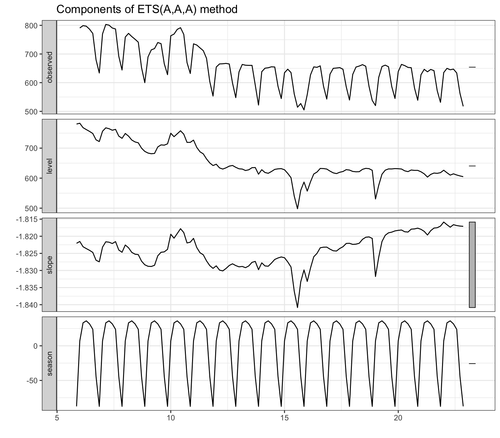
Figura 13: Componentes del modelo de Holt-Winters aditivo para Demanda eléctrica
La calidad de las predicciones es notable, con un error porcentual medio del 2%.
l b s1 s2 s3 s4 s5 s6 s7
604.971 -1.817 -87.460 -44.308 23.797 31.711 36.039 33.168 7.059
Como el último dato de la serie es domingo 28 de mayo, los valores del nivel \(l\) y la pendiente \(b\) mostrados corresponden a ese día. Sin embargo, la componente estacional tiene un orden muy peculiar: s1 es el valor estacional para domingo (día del último dato), s2 el de sábado, s3 de viernes, hasta s7 que sería lunes. Podemos reproducir las predicciones para los próximos 7 días, 29 de mayo a 4 de junio (ojo, el etiquetado de la salida no tiene sentido):
Figura 14: Demanda eléctrica y predicción con alisado de Holt-Winters aditivo
Ejemplo con Nacimientos
Vamos a usar el método de Holt-Winters multiplicativo para predecir la serie Nacimientos, que presentaba un esquema multiplicativo. En este caso usaremos el argumento model = "MAM". Vamos a considerar la serie Nacimientos desde enero de 2000 y pedir una previsión a dos años vista.
nacimientosb <-window(nacimientos, start =2000)nacimientosbEts <-ets(nacimientosb, model ="MAM", damped =FALSE)summary(nacimientosbEts)
ETS(M,A,M)
Call:
ets(y = nacimientosb, model = "MAM", damped = FALSE)
Smoothing parameters:
alpha = 0.6204
beta = 0.0558
gamma = 5e-04
Initial states:
l = 33046.8523
b = 131.8326
s = 0.9952 0.9997 1.0552 1.041 1.0305 1.0353
0.9755 1.0058 0.9641 0.9947 0.9081 0.995
sigma: 0.0279
AIC AICc BIC
5610.133 5612.400 5672.403
Training set error measures:
ME RMSE MAE MPE MAPE MASE
Training set -5.134912 897.6154 676.3738 -0.05344224 1.964899 0.4945157
ACF1
Training set -0.009251017
Los valores óptimos de los parámetros son \(\alpha=\) 0.62, \(\beta=\) 0.06 y \(\gamma=\) 0. Los valores tan bajos para \(\beta\) y \(\gamma\) indican que ambas, la pendiente y la estacionalidad, modifican su valor muy lentamente (véase Figura 15).
autoplot(nacimientosbEts)
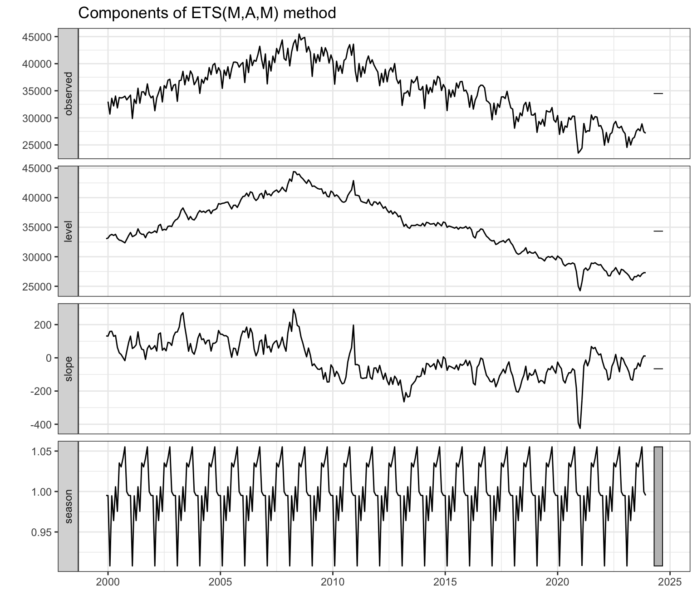
Figura 15: Componentes del modelo de Holt-Winters multiplicativo para Nacimientos
La calidad de las predicciones es notable, con un error porcentual medio inferior al 2%.
Como el último dato de la serie es diciembre de 2023, los valores del nivel \(l\) y la pendiente \(b\) mostrados corresponden a ese mes. Sin embargo, recuerda que la componente estacional sigue un orden inverso: s1 es el valor estacional para diciembre (mes del último dato), s2 el de noviembre, s3 de octubre, hasta s11 que sería febrero y s12 que es enero.
Podemos reproducir las predicciones para los primeros 12 meses de enero a diciembre (recuerda, el etiquetado de la salida no es correcto) para ver que coinciden con las obtenidas con la función forecast (solo se muestran los primeros meses).
nacimientosbf <-forecast(nacimientosbEts, h =24, level =95)nacimientosbf
Point Forecast Lo 95 Hi 95
Jan 2024 27173.03 25687.72 28658.35
Feb 2024 24809.49 23172.46 26446.53
Mar 2024 27186.43 25088.71 29284.16
Apr 2024 26359.96 24031.04 28688.89
May 2024 27513.50 24772.00 30254.99
La Figura 16 muestra la serie Nacimientos y las previsiones extramuestrales.
Figura 16: Nacimientos y predicción con alisado de Holt-Winters multiplicativo
5.8 Ejemplo con transformación logarítmica
Una alternativa para predecir cualquier serie es predecir su transformación logarítmica. Después, se aplica la transformación inversa y se obtienen las predicciones de la serie original. No siempre, pero este procedimiento puede mejorar la calidad de las predicciones. Además, este proceso asegura que las predicciones y sus intervalos sean siempre positivas (ve a la píldora Series acotadas para aprender más sobre cómo garantizar que las predicciones sean positivas o que permanezcan dentro de cierto intervalo).
El uso de la transformación logarítmica en la estimación de modelos y predicción se puede realizar de forma sencilla y transparente con cualquiera de las funciones de que hemos visto a partir de los argumentos lambda y biasadj.
lambda = 0 indica que se ha de realizar la transformación logarítmica de la serie previamente a su modelización. Es un parámetro de la transformación Box-Cox que no veremos en detalle en el tema 3.
biasadj = TRUE es necesario si tras una transformación de la serie original queremos que las predicciones sean insesgadas. Es decir, queremos obtener la predicción media.
Sea \(y_t\) la serie original y \(z_t=log(y_t)\) su transformación logarítmica. Si obtenemos una predicción \(\widehat{y}_t\) de la serie original, esta será insesgada \(E[\widehat{y}_t]=y_t\). Ahora bien, si obtenemos una predicción \(\widehat{z}_t\) de la serie transformada, podemos pensar que \(e^{\widehat{z}_t}\) es una predicción insesgada de la serie original, pero resulta que \(E[e^{\widehat{z}_t}] \neq y_t\). Es decir, la exponencial de la predicción de la serie con transformada logarítmica no es insesgada.
Si el argumento biasadj es fijado a FALSE, las predicciones se calcularán de forma directa deshaciendo la transformación y serán sesgadas. En concreto, lo que se obtiene es una predicción mediana. Si, por el contrario, es fijado a TRUE, las predicciones se calcularán por medio de una fórmula alternativa y serán insesgadas.
En ambos casos, para series largas no debería observarse mucha diferencia entre las dos alternativas.
Vamos a practicar el uso de estos argumentos con la serie Nacimientos. Como se va a predecir el logaritmo de la serie, se debe indicar a la función etsmodel = "AAA" que estima el modelo Holt-Winters aditivo. Además, vamos a pedir que las predicciones sean insesgadas con biasadj = TRUE.
nacimientosbEtsl <-ets(nacimientosb, model ="AAA",damped =FALSE,lambda =0, biasadj =TRUE)summary(nacimientosbEtsl)
ETS(A,A,A)
Call:
ets(y = nacimientosb, model = "AAA", damped = FALSE, lambda = 0,
biasadj = TRUE)
Box-Cox transformation: lambda= 0
Smoothing parameters:
alpha = 0.1705
beta = 0.0167
gamma = 0.238
Initial states:
l = 10.4339
b = 0.0018
s = -0.003 -0.0019 0.0714 0.0414 0.0262 0.0501
-0.033 0.0193 -0.0347 7e-04 -0.0825 -0.054
sigma: 0.0319
AIC AICc BIC
-335.7953 -333.5286 -273.5250
Training set error measures:
ME RMSE MAE MPE MAPE MASE
Training set -44.35512 1027.493 790.4967 -0.1628669 2.306132 0.5779541
ACF1
Training set 0.3934765
Point Forecast Lo 95 Hi 95
Jan 2024 26135.50 24538.61 27808.00
Feb 2024 23986.95 22496.49 25549.22
Mar 2024 26440.42 24765.65 28197.52
Apr 2024 25043.49 23422.65 26745.85
May 2024 26220.07 24482.22 28047.52
Jun 2024 26154.97 24375.98 28028.23
Jul 2024 27892.18 25941.54 29949.25
Aug 2024 27928.60 25916.90 30053.54
Sep 2024 27736.43 25675.61 29917.12
Oct 2024 28239.86 26072.73 30537.46
Nov 2024 26788.88 24663.29 29047.04
Dec 2024 26108.97 23965.13 28391.50
Jan 2025 25772.10 23459.27 28249.45
Feb 2025 23654.81 21463.52 26007.37
Mar 2025 26075.92 23581.11 28760.82
Apr 2025 24699.86 22258.22 27334.22
May 2025 25862.07 23219.93 28720.32
Jun 2025 25799.72 23075.26 28755.17
Jul 2025 27515.41 24511.85 30782.96
Aug 2025 27553.51 24444.55 30945.78
Sep 2025 27366.17 24174.78 30859.08
Oct 2025 27865.28 24507.29 31552.14
Nov 2025 26435.89 23144.69 30061.20
Dec 2025 25767.32 22454.11 29429.10
En este caso la calidad de las predicciones (MAPE = 2.3%) es algo superior a la obtenida con la serie sin transformar.
La Figura 17 muestra la serie Nacimientos y las previsiones extramuestrales obtenidas con y sin la transformación logarítmica. En este caso, las previsiones con la serie sin transformar son algo mayores que las obtenidas con la serie transformada.
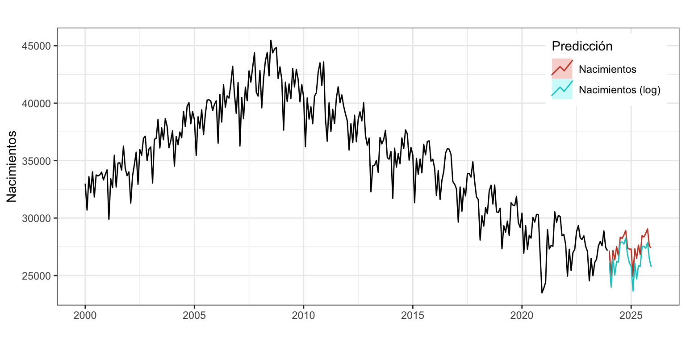
Figura 17: Nacimientos y dos predicciones con alisado de Holt-Winters
La Tabla 2 muestra las predicciones de Nacimientos obtenidas sin transformar la serie, con transformación logarítmica y predicciones insesgadas (biasadj = TRUE), y con transformación logarítmica y predicciones sesgadas (biasadj = FALSE).
Tabla 2: Diferencias en la predicción según transformación logarítmica y corrección por sesgo
Sin transformar
log(Nac) insesgadas
log(Nac) sesgadas
27173.03
26135.50
26122.21
24809.49
23986.95
23974.32
27186.43
26440.42
26425.93
26359.96
25043.49
25029.15
27513.50
26220.07
26204.31
26694.74
26154.97
26138.39
28342.40
27892.18
27873.46
28220.86
27928.60
27908.68
28520.17
27736.43
27715.35
28920.10
28239.86
28216.92
27410.90
26788.88
26765.57
27296.89
26108.97
26084.59
Las predicciones sesgadas son menores que las insesgadas. Esto siempre es así. La diferencia depende fundamentalmente de la desviación típica del error, sigma en la salida de los métodos de alisado exponencial. Cuanto mayor es sigma, mayores son las diferencias.
Por otro lado, las predicciones obtenidas sin y con la transformación logarítmica no guardan ninguna relación.
Ni la transformación logarítmica ni el uso de predicciones insesgadas aseguran mejores predicciones respecto de otras opciones, como puede ser trabajar con predicciones sesgadas o no realizar la transformación logarítmica. Hay que usar Origen de predicción móvil para determinar que transformación es la mejor.
5.9 Casos generales de alisado exponencial: la función ets (de nuevo)
En los epígrafes previos hemos visto cinco de los casos expuestos en la taxonomía de la Tabla 1, fijados a partir de los argumentos model y damped de la función ets. Veamos ahora como estimar cualquiera de los treinta modelos que surgen según las diferentes posibilidades de la tendencia (N, A, Ad, M y Md), la estacionalidad (N, A y M) y el error (A, M).
Recordemos que el tipo de error no influye en el cálculo de las previsiones, solo influye en el cálculo del intervalo de confianza de estas.
Podemos estimar cualquiera de los treinta modelos usando la función ets del paquete forecast.
Lo más habitual es no saber cual es el mejor modelo, entendiendo como tal, el que mejor se ajusta a la serie temporal. De hecho, si lo que buscamos es predecir bien, el mejor modelo será el que mejor prediga.
Si en una de las tres letras del código del modelo se indica “Z”, la función ets selecciona de entre los modelos posibles el que mejor se ajusta. Por ejemplo, model = "AAZ" indica un modelo con error y pendiente aditivos y dejaría a ets la búsqueda de la mejor opción para la estacionalidad (aditiva o multiplicativa). Si se especifica model = "ZZZ junto con damped = NULL (opciones por defecto) se dejaría a la función total libertad para buscar entre todos los modelos (excepto aquellos con pendiente multiplicativa). Si se desea restringir la búsqueda a modelos sin amortiguamiento basta indicar damped = FALSE y si se desea restringir la búsqueda solo a modelos aditivos se puede usar el argumento additive.only = TRUE.
Criterios de optimización
Fijado un modelo, ets estima por defecto sus parámetros maximizando la función de verosimilitud. Esta búsqueda esta restringida a \(0 < \beta < \alpha < 1\), \(0 < \gamma < 1 - \alpha\) y \(0.8 < \phi < 0.98\). Es decir, los tres primeros parámetros nunca pueden ser 0 o 1, y en la práctica sus valores límite son 0.0001 y 0.9999.
Puedes cambiar el criterio de optimización con el argumento opt.crit. Por defecto vale “lik” (de likelihood o verosimilitud), pero si lo fijas a opt.crit = "mse" se estiman los parámetros que minimizan el error cuadrático medio. Otra opción interesante es opt.crit = "amse" que minimiza la media de los errores cuadráticos medios obtenido sobre las previsiones hasta nmse periodos vista. En este caso usa el argumento nmse para fijar el valor numérico del horizonte temporal.
Criterios de selección de modelos
Queda pendiente saber que criterio se usa para seleccionar el modelo cuando se ofrece esta opción. Esto se hace a partir de un criterio de información entre Akaike (aic), Akaike corregido para pequeñas muestras (aicc) y el Bayesiano (bic). Sus fórmulas son: \[aic = -2log(L) + 2k\]\[aicc = aic + \frac{k(k+1)}{T-k-1}\]\[bic=aic + k(log(T) - 2)\] donde \(L\) es la verosimilitud, \(T\) el número de datos y \(k\) el de parámetros estimados (incluidos los puntos iniciales de arranque y la desviación típica del error).
Cuanto menor es el criterio de información, mejor modelo. Por defecto se usa Akaike corregido para pequeñas muestras (aicc), pero el argumento ic permite cambiar de criterio.
Una reflexión sobre los métodos automáticos de selección de modelos
Con el comando forecast(ets(nacimientos),h=24) obtenemos una predicción mensual a dos años vista del número de nacimientos en España. Así de simple, solo 31 caracteres. Todo esto gracias a que un algoritmo interno ha estimado los parámetros de múltiples modelos, elegido el mejor modelo de todos y lo ha usado para obtener las predicciones. Podemos afirmar que tenemos las mejores predicciones. Un momento, ¿podemos?
Parémonos a reflexionar sobre lo que hemos hecho o, más bien, lo que el algoritmo ha hecho y a contrastarlo con lo que nosotros queríamos. Por un lado, el algoritmo estima los parámetros de un menú fijo de modelos y para ello usa un criterio de optimización, que por defecto es maximizar la función de verosimilitud; cuando ya tiene estimados todos los modelos, elije el mejor usando el criterio de información de Akaike corregido para muestras pequeñas; y finalmente, nosotros medimos la capacidad predictiva del modelo seleccionado usando el error absoluto porcentual medio. Vaya, resulta que en los procesos de identificación y estimación del mejor modelo se usan dos criterios diferentes, que además no coinciden con nuestro criterio de calidad de las predicciones.
Si consideramos que la calidad de un modelo viene dada por el error absoluto porcentual medio en las predicciones intramuestrales a un periodo vista (lo que hemos decidido llamar MAPE), ¿no deberíamos estimar los parámetros del modelo usando como criterio la minimización del MAPE?, ¿no deberíamos elegir entre varios modelos aquel que presenta un MAPE menor? De esta forma, en todos los pasos del proceso se usa el mismo criterio, que es, además, el criterio que hemos considerado adecuado para valorar la calidad de las predicciones.
Pero no es esto lo que hacemos.
Nada nos garantiza que el modelo estimado y seleccionado por el algoritmo estime las mejores predicciones posibles. Y por mejores quiero decir que de entre todos los posibles modelos del menú y todos los posibles valores de sus parámetros, el seleccionado sea el que minimiza nuestro criterio de calidad de las predicciones.
Ahora ya podemos dar respuesta a la pregunta del primer párrafo: no, no podemos afirmar que nuestras predicciones sean las mejores.
Alguien dirá que casi seguro entre las predicciones subóptimas obtenidas por el algoritmo con su extraña mezcla de criterios y las predicciones óptimas de verdad no habrá mucha diferencia. Total, que más da una función de verosimilitud que un criterio de información que una medida del error medio. Pero lo cierto es que no lo sabemos, no tenemos ni idea de la distancia que hay entre lo óptimo y lo subóptimo, y si el coste de equivocarme en las predicciones es alto, puede que incluso una pequeña diferencia sea relevante.
Esta reflexión realizada en el contexto de series temporales y para la función ets es aplicable a todos los casos donde dejamos que un algoritmo ya programado elija el mejor modelo, y se basa en el hecho de que rara vez los criterios de estimación y elección que usan los algoritmos coinciden con el concepto de calidad de ajuste que estamos interesados.
A pesar de lo aquí expuesto, como es más cómodo (y rápido) tirar de rutinas ya programadas que escribir nuestro propio código, seguiremos trabajando con modelos subóptimos y obteniendo estimaciones subóptimas, pero diciendo que son las mejores.
6 Ejemplos de aplicación
6.1 Recogida de residuos
Identificación y estimación del mejor modelo
Si estimamos el mejor modelo de alisado exponencial para la serie Residuos sin ningún tipo de restricción, nos encontramos:
residuosEts <-ets(residuos)summary(residuosEts)
ETS(M,N,N)
Call:
ets(y = residuos)
Smoothing parameters:
alpha = 0.9999
Initial states:
l = 504.2743
sigma: 0.0395
AIC AICc BIC
267.4168 268.4168 271.4134
Training set error measures:
ME RMSE MAE MPE MAPE MASE
Training set -1.331356 21.20947 15.95526 -0.3461958 2.946509 0.9659013
ACF1
Training set 0.4113965
El modelo estimado es ETS(M,N,N) o “MNN”, un modelo sin pendiente ni estacionalidad y con error multiplicativo. Es decir, \(y_{t+1} = l_t \cdot (1 + \varepsilon_{t+1})\).
El valor de \(\alpha\) técnicamente es 1, indicando que el nivel de la serie varia en el tiempo y que prácticamente estamos usando para las previsiones el método Ingenuo I.
Respecto de la calidad del modelo, el valor de MAPE= \(2.9\)% evidencia que estamos ante un modelo que se ajusta bien a los datos. MASE= \(0.97\) indica que el modelo de alisado exponencial simple reduce en solo un \(3\)% el error del método ingenuo I. Además, el modelo estimado no presenta sesgo.
Predicción
Mediante la función forecast podemos predecir la serie Residuos. Por tratarse de un modelo sin pendiente ni estacionalidad, la predicción es constante en el tiempo (véase Figura 18).
residuosEtsPre <-forecast(residuosEts, h =5,level =95)residuosEtsPre
Point Forecast Lo 95 Hi 95
2023 467 430.8246 503.1754
2024 467 415.8229 518.1771
2025 467 404.2976 529.7024
2026 467 394.5699 539.4301
2027 467 385.9894 548.0106
autoplot(residuosEtsPre,xlab ="",ylab ="Kg per cápita",main ="")
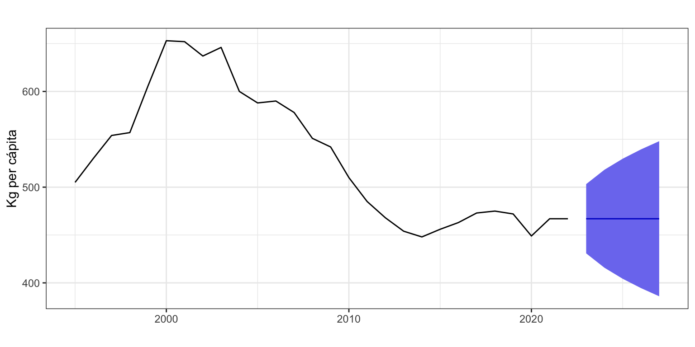
Figura 18: Residuos y predicción a 5 años vista
Análisis del residuo
El error de un modelo de alisado contiene la componente de Intervención y el propio término de Error. Ver numérica o gráficamente el error permite identificar fácilmente la presencia de valores atípicos (intervención). Obtenemos el error con la función residuals.
La Figura 19 muestra que aunque algún error supera las dos desviaciones típicas, ninguno puede ser considerado claramente como atípico.
Validación: error extramuestral a varios periodos vista
Vamos a mejorar la estimación de la calidad de las predicciones obteniendo el MAPE para previsiones extramuestrales a varios periodos vista. Para ello vamos a reservar, por ejemplo, las últimas 6 observaciones de la serie Residuos y ajustar el modelo con las restantes. Después usaremos este modelo para calcular las predicciones a 6 periodos vista y compararlas con los valores reales de la serie Residuos.
Recuerda, este método para valorar la calidad de las predicciones usa la filosofía del método Conjunto de entrenamiento/Conjuto de prueba: el periodo de datos usado en la estimación no se usa como periodo de datos para la validación. Sin embargo, tiene el problema de que el error obtenido es una mezcla de errores de predicción a corto, medio y largo plazo difícil de valorar. Además, los resultados dependen tremendamente del punto de corte temporal seleccionado.
# Definimos las observaciones intra y extramuestralesresiduoIntra <-subset(residuos, end =length(residuos) -6)residuoExtra <-subset(residuos, start =length(residuos) -5)# Estimamos el modelo con todos los datos menos los 6 ultimosresiduoIntraEts <-ets(residuoIntra, model ="MNN")# Predecimos los 6 años que hemos quitado de la serie y # vemos la calidad del ajuste.residuoExtraPre <-forecast(residuoIntraEts, h =6)accuracy(residuoExtraPre, residuoExtra)
ME RMSE MAE MPE MAPE MASE
Training set -1.871978 22.991867 17.76552 -0.4684683 3.198782 0.9566051
Test set 4.167367 9.600651 8.83380 0.8571971 1.896492 0.4756662
ACF1 Theil's U
Training set 0.46584679 NA
Test set -0.00266122 0.7098219
Atendiendo al MAPE se tiene que el error de previsión a un periodo vista en el periodo intramuestral de 1995 a 2016 es del 3.2%; y el error de previsión a largo plazo en el periodo extramuestral de 2017 a 2022 es del 1.9%. Para el punto de corte elegido, la calidad de las previsiones no se deteriora cuanto nos salimos de las condiciones óptimas.
Un gráfico puede ayudar a entender este proceso de validación. En la Figura 20:
La línea de puntos vertical separa el periodo muestral (1995-2016) usado para estimar el modelo, del periodo extramuestral (2017-2022) usado sólo para hacer las previsiones.
La serie Residuos aparece como una línea sólida en negro, desde 1995 hasta 2022.
La previsión intra-muestral (a un periodo vista) de la serie Residuos aparece como una línea azul. Observa la previsión puede ser mayor o menor que la serie, no evidenciándose sesgo.
La línea en rojo es la previsión extra-muestral a largo plazo: \(\hat{y}_{T+h}=l_T\), donde \(T=2016\). Observa que casi todas las previsiones están por debajo del valor real de la serie.
Al lado de cada previsión se ha indicado el error estimado (MAPE). Para la previsión extramuestral, el error es la media de errores muy bajos (primeras previsiones) y errores muy elevados (últimas previsiones).
Claramente estos resultados dependen del punto de corte seleccionado.
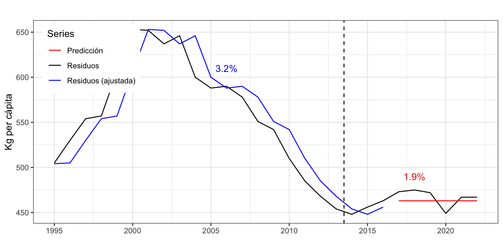
Figura 20: Residuos, predicción intra y extramuestral
La presencia de tendencia, primero creciente y luego decreciente, en la serie Residuos puede hacernos pensar que un modelo más adecuado para su ajuste y predicción sería ETS(M,A,N), forzando a que haya pendiente. De hecho, el error de estimación de este modelo es del 2.6%, frente al 2.9% para el modelo ETS(M,N,N). Sin embargo, el error de previsión extramuestral a largo plazo para el modelo ETS(M,A,N) es del 6.5%, frente al 1.9% para el modelo ETS(M,N,N). Mejor ajuste no implica mejor predicción. De nuevo, incidir en que claramente estos resultados dependen del punto de corte seleccionado.
6.2 Nacimientos
Veamos un segundo ejemplo con la serie Nacimientos (desde el año 2000).
Identificación y estimación del mejor modelo
Si damos total libertad al proceso de selección del mejor modelo, el modelo estimado es ETS(A,A,A), es decir, \(y_{t+1} = l_t + b_t + s_{t+1-m} + \varepsilon_{t+1}\).
ETS(A,A,A)
Call:
ets(y = nacimientosb)
Smoothing parameters:
alpha = 0.4892
beta = 0.0107
gamma = 1e-04
Initial states:
l = 33052.834
b = 143.8979
s = -11.4659 3.8886 1957.737 1463.932 1013.289 1255.209
-953.4959 217.809 -1369.601 -172.4478 -3318.506 -86.3485
sigma: 906.7055
AIC AICc BIC
5570.926 5573.193 5633.196
Training set error measures:
ME RMSE MAE MPE MAPE MASE
Training set -64.51908 881.1593 672.4836 -0.2064835 1.96789 0.4916715
ACF1
Training set 0.05973202
El bajo valor de \(\beta\) y \(\gamma\) indican que ambas, la pendiente y la estacionalidad, varían muy lentamente en el tiempo (véase la Figura 21).
autoplot(nacimientosEts,xlab ="Periodo",main ="")
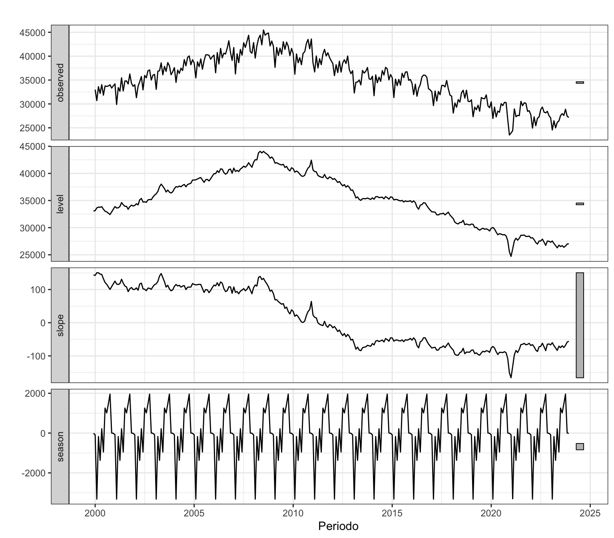
Figura 21: Componentes del modelo óptimo para Nacimientos
Respecto de la calidad del modelo, el MAPE de 2% indica que estamos ante un modelo que se ajusta muy bien a los datos; y el valor de MASE igual a 0.49 indica que este modelo reduce en un 51% el error del método ingenuo con estacionalidad, el más sencillo posible. El modelo no tiene sesgo y el valor de ACF1 de 0.06, inferior a 0.1, indica que el intervalo de confianza de las predicciones está bien calculado.
Podemos ver los últimos valores estimados del nivel, la pendiente y la estacionalidad para interpretarlos. Como el último dato de la serie es diciembre de 2023, los valores del nivel \(l\) y la pendiente \(b\) mostrados corresponden a ese mes.
Febrero es el mes con menor número de nacimientos: nacen 3318 bebés menos, respecto de la media anual. En octubre es cuando más bebés nacen: 1957 más que la media anual.
Predicción
Si pedimos los valores de predicción tenemos (sólo se muestran los primeros meses):
nacimientosEtsPre <-forecast(nacimientosEts, h =24, level =95)nacimientosEtsPre
Point Forecast Lo 95 Hi 95
Jan 2024 26899.74 25122.63 28676.85
Feb 2024 23611.82 21625.03 25598.61
Mar 2024 26702.09 24517.87 28886.32
Apr 2024 25449.18 23076.55 27821.81
May 2024 26980.82 24426.68 29534.96
La Figura 22 muestra la serie Nacimientos, su predicción a dos años vista y el intervalo de confianza.
Se identifica varios valores claramente atípicos –superan las 3 desviaciones típicas– que corresponden a enero de 2011 y, aproximadamente, nueves después del confinamiento por la pandemia (diciembre de 2020, y febrero y marzo de 2021). Abril de 2008 y diciembre de 2010 son otros candidatos a intervención por superar las 2.5 desviaciones típicas.2
En este caso solo se identifica como atípico el valor de diciembre de 2020.
Validación: error extramuestral según horizonte temporal
En este ejemplo calcularemos el error extramuestral según el horizonte temporal de previsión, una metodología que ya hemos visto anteriormente.
k <-120h <-12TT <-length(nacimientosb)s <- TT - k - h mapeAlisado <-matrix(NA, s +1, h)for (i in0:s) { train.set <-subset(nacimientosb, start = i +1, end = i + k) test.set <-subset(nacimientosb, start = i + k +1, end = i + k + h) fit <-ets(train.set, model ="AAA", damped =FALSE) fcast<-forecast(fit, h = h) mapeAlisado[i +1,] <-100*abs(test.set - fcast$mean)/test.set}errorAlisado <-colMeans(mapeAlisado)errorAlisado
ggplot() +geom_line(aes(x =1:12, y = errorAlisado)) +ggtitle("") +xlab("Horizonte temporal de predicción") +ylab("MAPE") +scale_x_continuous(breaks=1:12)
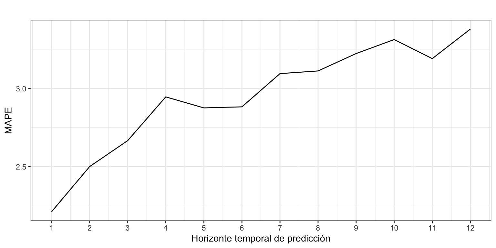
Figura 24: Error de predicción según horizonte temporal
La Figura 24 muestra el error de previsión extramuestral según el horizonte temporal. El error extramuestral a un periodo vista es comparable al error intramuestral (2.2% frente a 2.0%). Aunque el error de previsión aumenta conforme lo hace el horizonte temporal, siempre se mantiene muy bajo. Por ejemplo, en las previsiones a 12 meses vista el error es del 3.4%.
6.3 Demanda eléctrica
Consideremos la serie de consumo eléctrico diario durante el años 2023.
Identificación y estimación del mejor modelo
El modelo óptimo sin restricciones es (MAdM) con un valor de \(\phi\) cercano al máximo de 0.98, por lo que se solicita el modelo óptimo excluyendo modelos con tendencia amortiguada.
ETS(A,N,A)
Call:
ets(y = electricidad, damped = FALSE)
Smoothing parameters:
alpha = 0.8585
gamma = 1e-04
Initial states:
l = 696.9707
s = -49.2724 22.6105 35.9717 38.7919 33.4117 9.8245
-91.3378
sigma: 24.5881
AIC AICc BIC
4502.001 4502.623 4541.000
Training set error measures:
ME RMSE MAE MPE MAPE MASE
Training set -0.0244328 24.28306 14.89251 -0.08339514 2.300161 0.4679821
ACF1
Training set 0.024706
Ahora el mejor modelo no presenta tendencia y tiene error y estacionalidad aditiva, es decir, \(y_{t+1} = l_t + s_{t+1-m} + \varepsilon_{t+1}\).
El valor \(\gamma = 0\) indica que las estacionalidad se mantiene contante en el tiempo, mientras que el elevado valor de \(\alpha\) indica que el nivel de la serie cambia de forma constante. Este cambio de nivel está relacionado con las variaciones en el consumo eléctrico debido a los cambios en la temperatura y el uso de aparatos de climatización.
Respecto de la calidad del modelo, el MAPE de 2.3% indica que estamos ante un modelo que se ajusta muy bien a los datos; no hay sesgo (MPE es casi cero); y el valor de ACF1, muy bajo, indica que la fórmula usada para el cálculo del intervalo de confianza de las predicciones es válida.
Podemos ver los últimos valores estimados del nivel y la estacionalidad para interpretarlos. Recuerda que los valores de la componente estacional están ordenados alrevés (s1 es domingo y s7 es lunes).
El domingo la demanda eléctrica cae 91 GWh respecto de la media semanal. Por el contrario, el miércoles es el día de mayor incremento de demanda respecto de la media semanal, 39 GWh.
Predicción
Si pedimos los valores de predicción para las cuatro semanas siguientes, tenemos (sólo se muestran la primera):
electricidadEtsPre <-forecast(electricidadEts, h =28, level =95)electricidadEtsPre
El la Figura 26 se identifican múltiples días atípicos asociados con un consumo inferior al esperado debido a festividades: Año nuevo, Reyes, Semana Santa (el Viernes Santo fue el 7 de abril), Día del trabajador, Virgen de agosto, Día de la Hispanidad, Todos los Santos, Día de la Constitución y Navidad. El Día de la Inmaculada (8 de diciembre) no aparece por caer en domingo.
También se observan tres días con un consumo mayor de lo esperado justo después de un festivo, el 7 de enero (tras Reyes), el 8 de abril (Sábado Santo) y el 2 de noviembre (tras Todos los Santos). Aquí la causa no es tanto un incremento inesperado del consumo, como la dinámica del propio método de estimación. Al llegar un día festivo, el método de Alisado falla ofreciendo una predicción más alta de la real y dando lugar a un error negativo. Al día siguiente, el método de Alisado ajusta su predicción a la baja, pero por no ser festivo vuelve a fallar, esta vez ofreciendo una predicción más baja de la real y dando lugar a un error positivo.
Veamos como en este caso la prueba de Tukey identifica las mismas fechas.
7 Otras alternativas para ajustar un modelo y predecir
A la hora de ajustar un modelo a una serie y predecir hay que ser un poco imaginativos, dedicarle tiempo y probar cosas. Por ejemplo, podríamos considerar la transformación logarítmica de la serie. O podríamos cambiar el criterio de estimación de los parámetros o el de selección del modelo óptimo.
Yendo un poco más lejos, para una serie mensual (como Nacimientos) dado que el valor de la serie dependerá forzosamente del número de días del mes, podríamos ajustar y predecir el valor medio de la serie por día del mes. Por ejemplo, los nacimientos medios por día: cociente entre los nacimientos de cada mes y el número de días del mes. Esta serie tendrá una componente estacional más suave, al eliminar el efecto de los meses de febrero bisiestos, y tendrá, previsiblemente, un mejor ajuste.
También podemos mezclar varios de los enfoques previos o ser aún más imaginativos.
El siguiente código muestra el MAPE (para previsiones intramuestrales a un periodo vista) para la serie Nacimientos usando varias de estas opciones. Puedes deducir que se está haciendo en cada caso a partir del código. Sería más adecuado usar otro criterio de validación diferente, pero el objetivo de este epígrafe es recalcar que no hay que quedarse con lo inmediato (predecir una serie con las opciones por defecto de las funciones), sino probar y probar.
La principal conclusión en este caso es que salirse de la estimación directa sobre la serie original no reduce el error significativamente. Sin embargo, cabe destacar que,
El error de estimación de los nacimientos por día es menor que el error obtenido con la serie original de nacimiento. Véanse los tres últimos modelos respecto de los tres primeros.
Usar la transformación logarítmica (con o sin predicciones insesgadas) puede mejorar o no la capacidad predictiva del modelo, dependiendo del resto de parámetros. Véanse los modelos 4 a 9 respecto de los modelos 1 a 3.
El mejor modelo estima los nacimientos por día y estima los parámetros minimizando la verosimilitud o el error cuadrático medio (“mse”). No siempre el uso directo de la serie ofrece los mejores resultados.
8 Resumen de los comandos utilizados
Función
Paquete
Descripción
format
base
Da formato a un objeto de R para mejorar sus impresión
seq
base
Genera secuencias regulares, en particular de fechas de calendiario
fitted
stats
Obtiene las predicciones a un periodo vista intramuestrales
residuals
stats
Obtiene el residuo de un modelo estimado
accuracy
forecast
Calculo de la precisión del modelo
ets
forecast
Estimación de una amplia familia de métodos de alisado exponencial
forecast
forecast
Predice valores extramuestrales futuros de la serie
meanf
forecast
Predicción por media
naive
forecast
Predicción por método ingenuo I
rwf
forecast
Predicción por tendencia media
snaive
forecast
Predicción por método ingenuo con estacionalidad
References
Brown, Robert Goodell. 1959. Statistical Forecasting for Inventory Control. McGraw-Hill, New York.
Gardner, Everette S., and Ed. Mckenzie. 1985. “Forecasting Trends in Time Series.”Management Science 31 (10): 1237–46. https://doi.org/10.1287/mnsc.31.10.1237.
Holt, Charles C. 2004. “Forecasting Seasonals and Trends by Exponentially Weighted Moving Averages.”International Journal of Forecasting 20 (1): 5–10. https://doi.org/https://doi.org/10.1016/j.ijforecast.2003.09.015.
Hyndman, Rob J., and Y. Khandakar. 2008. “Automatic Time Series Forecasting: The Forecast Package for r.”Journal of Statistical Software 27 (3): 1–22. https://doi.org/10.18637/jss.v027.i03.
Hyndman, Rob J., A. Koehler, K. Ord, and R. Snyder. 2008. Forecasting with Exponential Smoothings. The State Space Approach. Springer Berlin, Heidelberg. https://doi.org/10.1007/978-3-540-71918-2.
Makridakis, Spyros, and Michèle Hibon. 2000. “The M3-Competition: Results, Conclusions and Implications.”International Journal of Forecasting 16 (4): 451–76. https://doi.org/10.1016/S0169-2070(00)00057-1.
Winters, Peter R. 1960. “Forecasting Sales by Exponentially Weighted Moving Averages.”Management Science 6 (3): 324–42. https://doi.org/10.1287/mnsc.6.3.324.
Footnotes
Formalmente en el modelo de Holt-Winters multiplicativo el error es aditivo. Es decir, debería ser (A, A, M). Sin embargo, debido a que desde un punto de vista teórico este modelo, junto con otros, puede tener varianza infinita, la función ets no permite por defecto su estimación. Para poder estimar con la función ets el modelo (A, A, M) es necesario añadir el argumento restrict = FALSE. Los modelos que para poder ser estimados requieren este argumento son: ANM, AAM, AAdM, MMA, MMdA, AMN, AMdN, AMA, AMdA, AMM y AMdM.↩︎
Recuerda que el valor de 3 es uno de los posibles y debe ajustarse a las características de la serie y el análisis.↩︎